QA view of mcqs.json. Each question shows options with the correct answer highlighted, the explanation, and cropped figures/tables (promotional content & watermarks removed). Amber banners mark answers inferred/flagged for your review. Total: 142 questions.
Q1
48 yr old on tamoxifen presented due to pain in loin, accidentally discovered to have an endometrial thickness of 22mm. How to evaluate?
- a.Hysteroscopy with biopsy
- b.Pipelle biopsy
- c.Reassure
- d.Stop tamoxifen
- e.Evaluate if symptomatic.✓
Correct answer: e. Evaluate if symptomatic.
For women on tamoxifen and symptoms of bleeding, urgent assessment is required, especially hysteroscopy and biopsy. Evidence does not support screening asymptomatic women with TVS and/or endometrial sampling; abnormal vaginal bleeding should prompt urgent investigation by TVS, hysteroscopy and endometrial sampling.
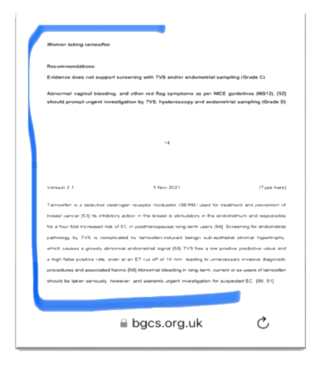
Q2
Question describes a scenario of endometrial hyperplasia with atypia. Patient refuses surgery. What is the recommended follow up?
- a.Endometrial biopsy at 3 months
- b.Endometrial biopsy at 6 months
- c.Endometrial biopsy at 3 monthly intervals, discharge after negative biopsy
- d.≥ 2 consecutive negative EBs at 3-month intervals, thereafter 6–12-monthly EB and review✓
- e.≥ 2 consecutive negative EBs at 3-month intervals
- f.≥ two consecutive negative EBs at 6-month intervals, thereafter annual EB and review.
Correct answer: d. ≥ 2 consecutive negative EBs at 3-month intervals, thereafter 6–12-monthly EB and review
Management of endometrial hyperplasia. For atypical hyperplasia (AH) managed non-surgically: ≥ two consecutive negative endometrial biopsies at 3-month intervals, thereafter 6–12-monthly EB and review.
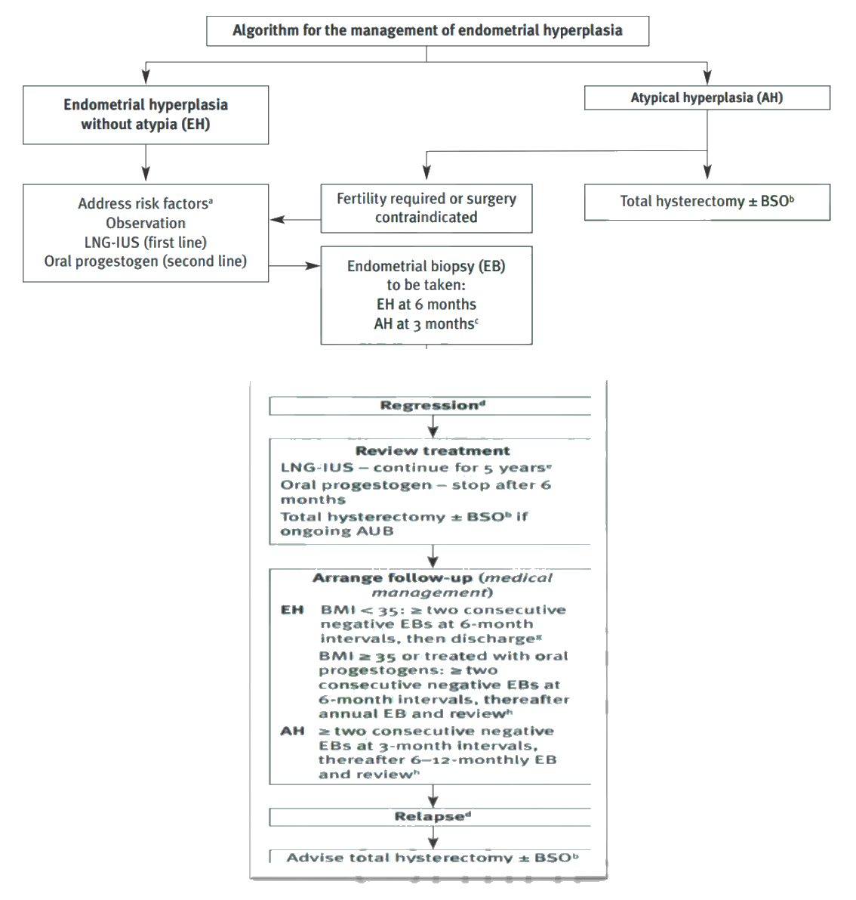
Q3
Question describes a scenario of endometrial hyperplasia with no atypia in an obese patient. How will you follow up?
- a.Endometrial biopsy at 3 months
- b.Endometrial biopsy at 6 months
- c.Endometrial biopsy at 3 monthly intervals, discharge after negative biopsy
- d.≥ 2 consecutive negative EBs at 3-month intervals, thereafter 6–12-monthly EB and review
- e.≥ 2 consecutive negative EBs at 3-month intervals
- f.≥ two consecutive negative EBs at 6-month intervals, thereafter annual EB and review✓
Correct answer: f. ≥ two consecutive negative EBs at 6-month intervals, thereafter annual EB and review
Endometrial hyperplasia without atypia (EH) with BMI ≥ 35 or treated with oral progestogens: ≥ two consecutive negative EBs at 6-month intervals, thereafter annual EB and review.

Q4
Post-menopausal woman was started on combined HRT 6 months ago. She presents with persistent bleeding for the past 2 months, despite dose adjustments and increase in progesterone component. What is the next step?
- a.TVS✓
- b.Pipelle biopsy
- c.Hysteroscopy guided biopsy
- d.Change to sequential HRT
- e.Stop HRT
Correct answer: a. TVS
Unscheduled bleeding on HRT: assess cancer risk factors and bleeding pattern, identify HRT regimen/duration/compliance, offer examination and investigations. With heavy/persistent bleeding, more than 6 months since starting HRT, or 1 major / 3 minor risk factors for endometrial cancer, arrange urgent TVS (within 6 weeks).
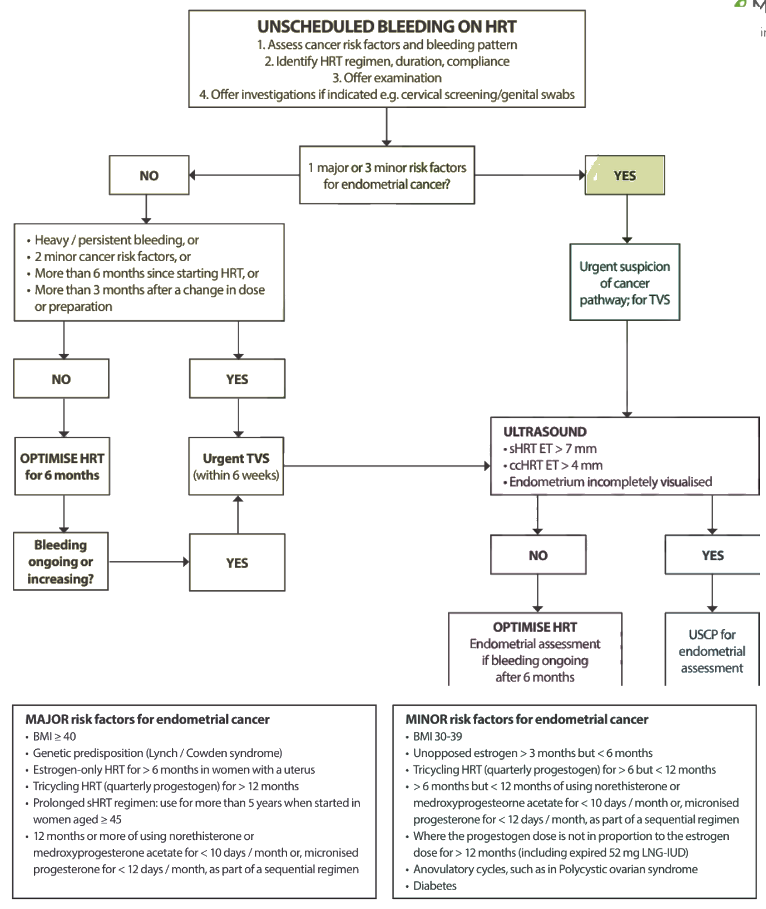
Q5
What is the risk of VTE in a postmenopausal woman on combined HRT for 5 years?
- a.Additional 5 / 1000 women using HRT
- b.Additional 7 / 1000 women using HRT✓
- c.Additional 13 / 1000 women using HRT
- d.Additional 8 / 1000 women using HRT
- e.Additional 12 / 1000 women using HRT
Correct answer: b. Additional 7 / 1000 women using HRT
Risks associated with combined estrogen-progestogen HRT: venous thromboembolism (VTE) over 5 years use adds approximately 7 extra cases per 1000 women using HRT.
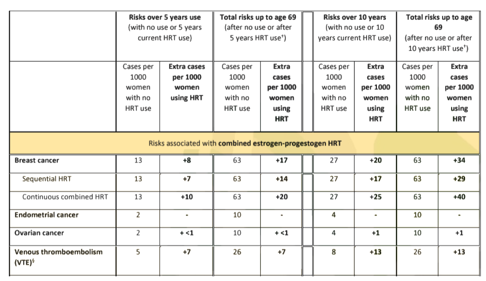
Q6
How will you manage unscheduled bleeding in a patient on estrogel 1.5 mg and micronized progesterone 100 mg? She presented with bleeding within 6 months of starting the regimen.
- a.Increase estrogen dose
- b.Change to sequential HRT regimen
- c.Change progesterone
- d.Increase progesterone dose to 200mg✓
- e.Reduce progesterone dose
Correct answer: d. Increase progesterone dose to 200mg
Unscheduled bleeding with sHRT/ccHRT within the first 6 months: options include increasing the micronised progesterone (MP) dose or changing to a synthetic progestogen, a 3-month trial of an additional progestogen on top of the current preparation, offering the 52 mg LNG-IUD, or changing to an oral preparation. Here, increase the progesterone dose to 200 mg.
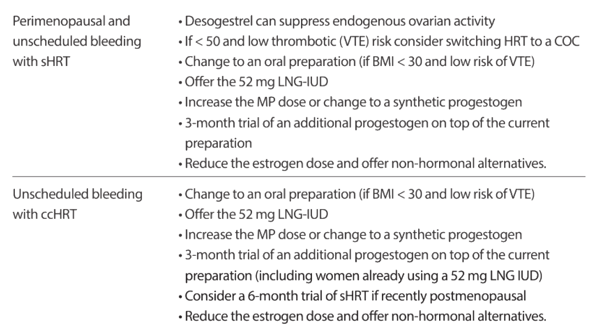
Q7
What is the most effective contraceptive for a patient on efavirenz?
- a.Barrier contraceptive
- b.Progesterone only pills
- c.Desogestrel
- d.Combined hormonal contraceptive pills
- e.Copper T✓
Correct answer: e. Copper T
Efavirenz (EFV) is an enzyme-inducing NNRTI. Contraceptive effectiveness of CHC, POP and ENG-IMP could be reduced (use not advised). DMPA, LNG-IUD and Cu-IUD have no expected effect and need no extra precautions; the Cu-IUD (Copper T) is the most effective option.
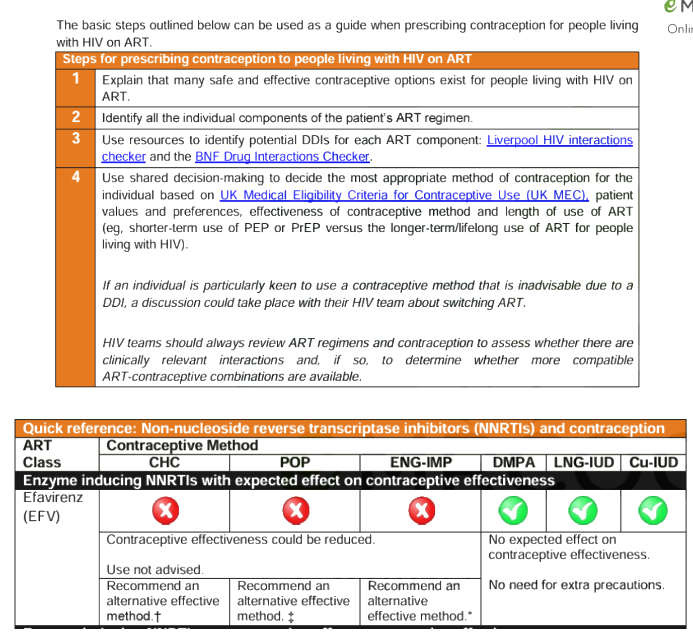
Q8
What is the most effective contraceptive for a patient on enzyme inducing anti-epileptic?
- a.Barrier contraceptive
- b.Progesterone only pills
- c.Desogestrel
- d.Combined hormonal contraceptive pills
- e.Copper T✓
Correct answer: e. Copper T
DMPA and IUCD are both correct, but DMPA has an extra benefit in the epileptic patient. For enzyme inducers, DMPA, LNG-IUS and Cu-IUD have no expected effect on contraceptive effectiveness and need no extra precautions; the Cu-IUD is the most effective method of emergency contraception.
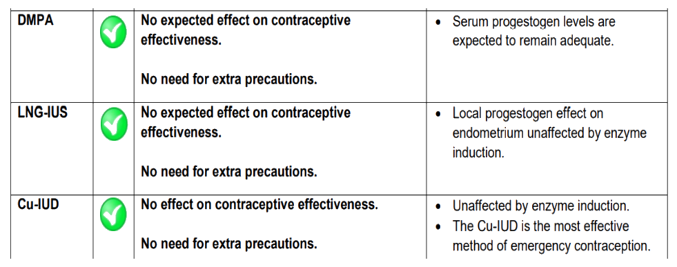
Q9
How would you evaluate a structurally normal severe SGA fetus with normal uterine Doppler, anomaly scan showing ventricular dilatation?
- a.Serological screening for CMV: CMV IgM and IgG with avidity
- b.B19V DNA or IgG seroconversion using an antenatal booking blood for parvovirus
- c.Screen for Toxoplasmosis + CMV
- d.Arrange for fetal echo
- e.Perform fetal echo + brain MRI
- f.Screen for toxoplasmosis.
- g.Consider invasive diagnostic testing including a Microarray to detect microdeletions.✓
Correct answer: g. Consider invasive diagnostic testing including a Microarray to detect microdeletions.
Invasive diagnostic testing should be offered in severely SGA fetuses with structural anomalies and considered in non-anomalous fetuses detected before 23 weeks of gestation, especially if uterine artery Doppler is normal. Analysis should include a microarray to detect microdeletions and microinsertions.
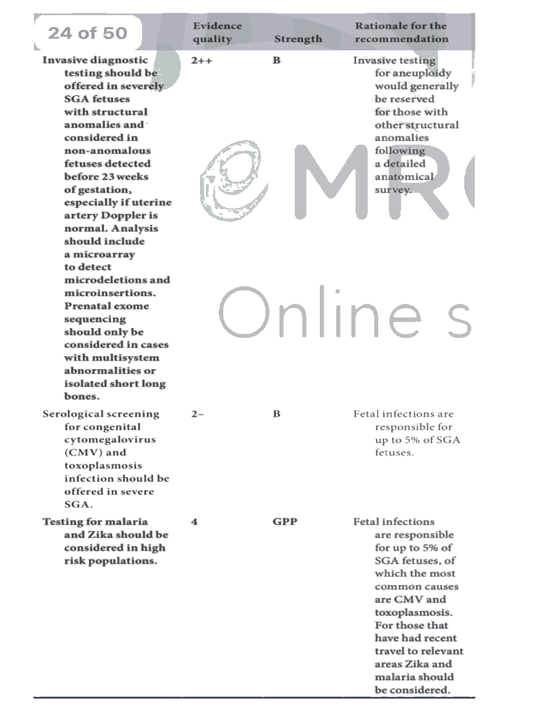
Q10
How would you evaluate a structurally normal SGA fetus with normal uterine Doppler, normal karyotyping, USG showing mild ventricular dilatation?
- a.Serological screening for CMV: CMV IgM and IgG with avidity✓
- b.B19V DNA or IgG seroconversion using an antenatal booking blood for parvovirus
- c.Screen for Toxoplasmosis + CMV
- d.Arrange for fetal echo
- e.Perform fetal echo + brain MRI
- f.Screen for toxoplasmosis
Correct answer: a. Serological screening for CMV: CMV IgM and IgG with avidity
Karyotyping normal. Serological screening for congenital CMV (and toxoplasmosis) should be offered in severe SGA, as fetal infections are responsible for up to 5% of SGA fetuses.
Q11
Postpartum patient on antiepileptic (lamotrigine). The dose was increased in pregnancy. What is the advice regarding her dose modification?
- a.Within 10 days✓
- b.Review in 4 weeks
- c.Review in 8 weeks
- d.Continue medications
- e.Continue pre-pregnancy antiepileptic dose
Correct answer: a. Within 10 days
If the AED dose was increased in pregnancy, it should be reviewed within 10 days of delivery to avoid postpartum toxicity. The increase should be clearly documented, with a plan to liaise with the neurological team to taper the dose in the first 10 days after delivery. If symptoms of AED toxicity develop in the puerperium (e.g. drowsiness, diplopia or unsteadiness), urgent neurological review is needed.
Q12
What is the suggested time to discontinue etanercept during pregnancy?
- a.30-32 wks✓
- b.21-22 wks
- c.26-28 wks
- d.28-32 wk
Correct answer: a. 30-32 wks
Accumulation of anti-TNF agents in the neonate (Table 2). Etanercept has a half-life of ~4 days and a low cord blood to maternal serum concentration (3.6–7.4%); suggested gestation to discontinue is 30–32 weeks.
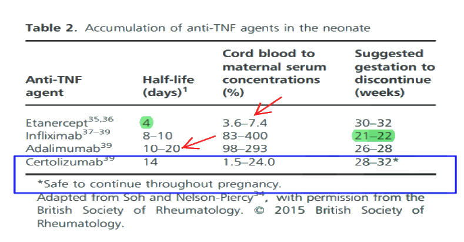
Q13
Patient had IUFD at 4 days after her EDD. Baby weighed 2.6 kg. She denied postmortem examination. External features of the baby appeared normal on examination. What could be the most probable cause of IUFD?
- a.Congenital anomaly
- b.Cord accident
- c.Placental dysfunction✓
- d.Karyotype anomalies
Correct answer: c. Placental dysfunction
Parents should be advised that no specific cause is found in almost half of stillbirths. An abnormal result might not be linked to the IUFD but rather be simply an incidental finding. Tests should be directed to identify scientifically proven causes of late IUFD. Commonly associated antepartum conditions include congenital malformation, congenital fetal infection, antepartum haemorrhage, pre-eclampsia and maternal disease such as diabetes mellitus. Common causes of intrapartum death include placental abruption, maternal and fetal infection, cord prolapse, idiopathic hypoxia–acidosis and uterine rupture.
Q14
Asthmatic patient presented in labour. In view of poor control, she was started on prednisolone 5mg since 3 weeks back. What is recommended steroid cover for her during labour?
- a.Give IV hydrocortisone during labour
- b.Increase prednisolone till respiratory medicine specialist consultation
- c.Give IV hydrocortisone only if she is planned for CS
- d.Continue prednisolone 5mg oral and offer hydrocortisone IV during labour✓
Correct answer: d. Continue prednisolone 5mg oral and offer hydrocortisone IV during labour
For adrenal insufficiency or those taking long-term oral steroids (equivalent to 5 mg or more prednisolone daily for more than 3 weeks): for women planning a vaginal birth, continue their regular oral steroids and give IV hydrocortisone; for women having a planned or emergency caesarean section, continue their regular oral steroids and give IV hydrocortisone when starting anaesthesia.
Q15
What is the recommended fluid management in a patient with pulse 120/min, BP 90/60 mmHg presenting with diabetic ketoacidosis?
- a.1 l normal saline in 1hr✓
- b.5 litre NS in 1 hr
- c.1 l dextrose normal saline in 1 hr
- d.0.9% normal saline 50 ml/kg/hr
- e.Several options mentioning various combinations
Correct answer: a. 1 l normal saline in 1hr
Fluid replacement should be commenced by infusing isotonic saline (0.9%), as most patients have a negative fluid balance of about 100 ml/kg of body weight. This represents a total fluid deficit of approximately 6–10 l. The IV infusion should be started at 10–15 ml/kg/h in the first hour, after which the rate should be adjusted according to the haemodynamic status of the patient, guided by monitoring of blood pressure, urine output and central venous pressure in selected cases. When blood glucose falls below 14 mmol/l (250 mg/dL), add dextrose 10% 125 ml/hour to the ongoing saline IV fluid therapy.
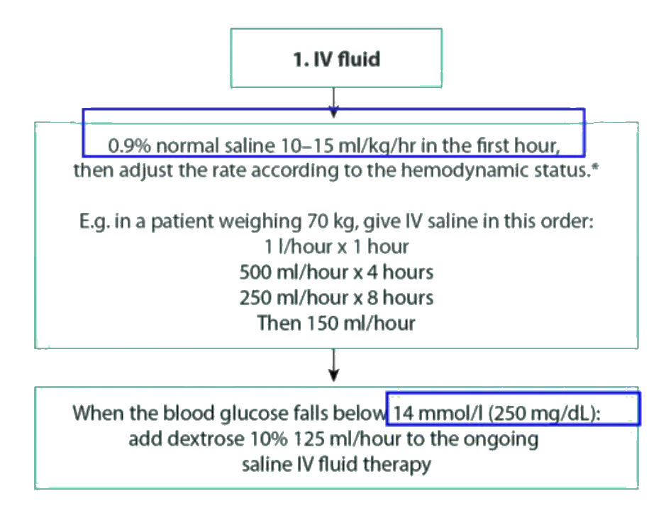
Q16
In an ongoing CPR on a collapsed type 1 diabetic patient, results of blood work show blood glucose at 4 mmol. She was at 23 wk GA and felt cold and clammy before the collapse. What is the next management?
- a.IM adrenaline
- b.Glucose infusion✓
- c.IV adrenaline
- d.IM glucagon
Correct answer: b. Glucose infusion
Advise pregnant women with diabetes who are taking insulin to maintain their capillary plasma glucose level above 4 mmol/litre. Common, reversible causes of maternal cardiopulmonary arrest (the 4 H's and 4 T's) should be considered throughout the resuscitation process. Emergency treatment of hypoglycaemia is chosen according to the condition of the patient: if conscious and able to swallow give oral fast-acting carbohydrate (Step A); if unconscious/fitting/unable to swallow, stop any IV insulin and give 10% glucose infusion 200 ml over 10 mins (or 20% glucose 100 ml stat) and/or IM glucagon 1 mg.
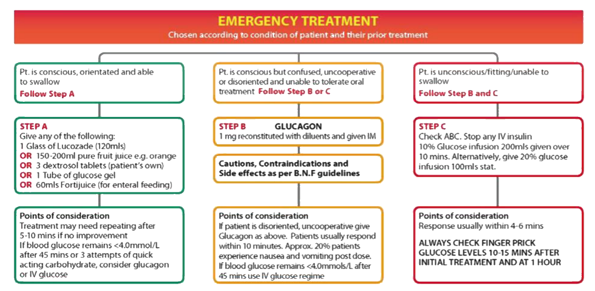
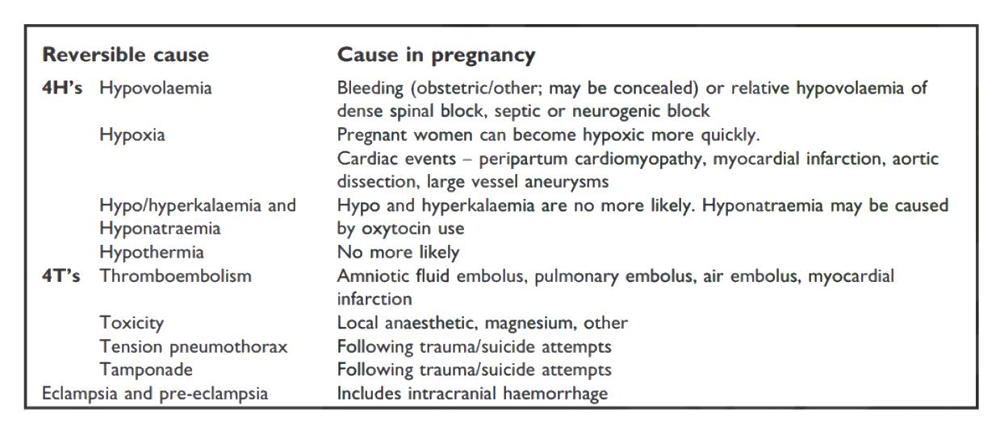
Q17
What is the risk in a patient with corrected tetralogy of Fallot according to the modified WHO classification of maternal cardiovascular risk?
- a.Class I
- b.Class II✓
- c.Class III
- d.Class IV
- e.Class V
Correct answer: b. Class II
According to the modified WHO classification of maternal cardiovascular risk, repaired tetralogy of Fallot is Class II (small increased risk of maternal mortality or moderate increase in morbidity). Class II also includes unoperated atrial or ventricular septal defect and most arrhythmias.
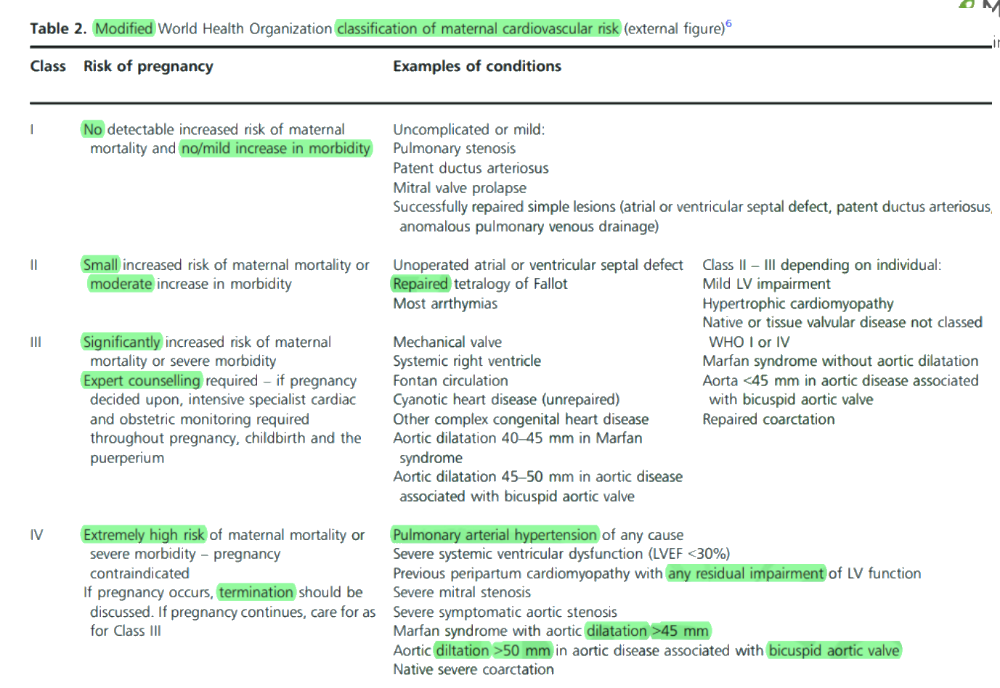
Q18
What is the fluid deficit cut off to prevent fluid overload when using an isotonic solution in operative hysteroscopy?
- a.2500 ml✓
- b.1000 ml
- c.1500 ml
- d.750 ml
Correct answer: a. 2500 ml
Definition of fluid overload: a fluid deficit of more than 1000 ml should be used as the threshold when using hypotonic solutions in healthy women of reproductive age [C]; a fluid deficit of 2500 ml should be used as the threshold when using isotonic solutions in healthy women of reproductive age [GPP]. A maximum fluid deficit of 1000 ml (hypotonic) or 2500 ml (isotonic) should be set in a healthy woman and surgery stopped on reaching this limit. Lower thresholds apply in the elderly and women with cardiovascular, renal or other co-morbidities (suggested upper limits 750 ml hypotonic and 1500 ml isotonic).
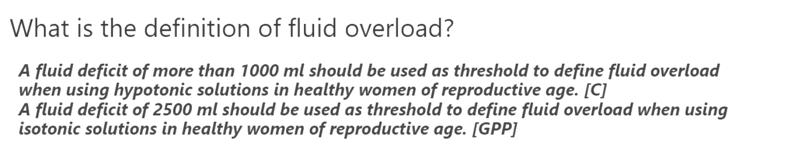
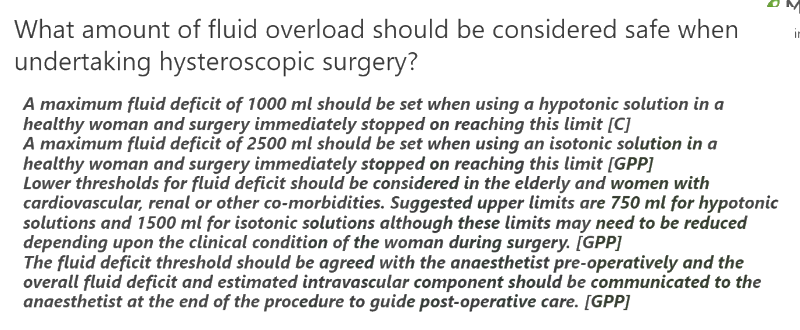
Q19
Patient is planned to undergo laparoscopic hysterectomy for benign disease. She is hypertensive and has a history of atrial fibrillation. She is on warfarin which was stopped 5 days before operation. What is the recommendation for bridging thromboprophylaxis for her?
- a.No need for bridging therapy
- b.Bridge with prophylactic LMWH and stop 24 hours before operation
- c.Bridge with prophylactic LMWH and stop 48 hours before operation
- d.Bridge with therapeutic LMWH and stop 24 hours before operation✓
- e.Bridge with therapeutic LMWH and stop 48 hours before operation
Correct answer: d. Bridge with therapeutic LMWH and stop 24 hours before operation
All patients taking warfarin should stop treatment 5 days before surgery, irrespective of their risk of intraoperative bleeding. Bridge with therapeutic-dose LMWH, with the therapeutic dose stopped 24 hours before surgery; bridging with LMWH should be continued until the INR is in therapeutic range. Warfarin can be resumed at the normal maintenance dose the evening of surgery or the next day if haemostasis is adequate. For procedures with a high bleeding risk, the British Society of Haematology recommends that bridging (full-dose anticoagulation) should not be restarted until at least 48 hours after the procedure.
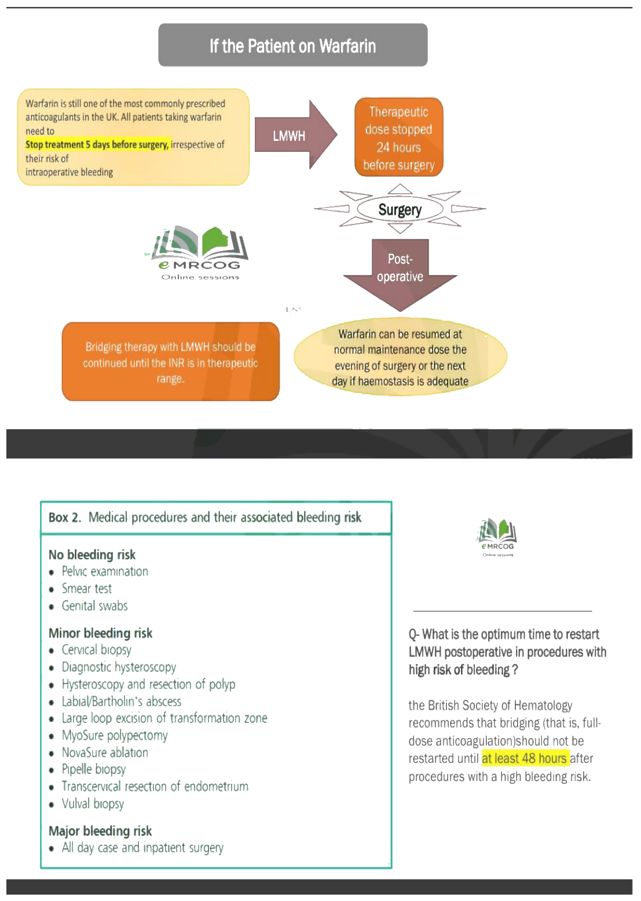
Q20
What is the recommended imaging technique for levator ani muscle avulsion injury?
⚠ Answer not highlighted in source — inferred from the explanation.
- a.MRI
- b.Transperineal USG
- c.Transvaginal USG
- d.Endoanal USG
- e.Tomographic imaging✓
Correct answer: e. Tomographic imaging
Maternal birth trauma in the form of levator ani muscle (LAM) avulsion occurs in 10–36% of women during vaginal childbirth. Forceps is the primary modifiable risk factor (odds ratios 4–5 for avulsion relative to Ventouse); rotational forceps appear particularly traumatic. In equivocal cases, a levator–urethra gap of greater than 25 mm can clarify findings. Since diagnosis by palpation has poor agreement with both transperineal and endovaginal ultrasound, diagnosis using tomographic imaging is currently the gold standard. (Note: the correct option was not highlighted in the source document; it is inferred from the explanation.)
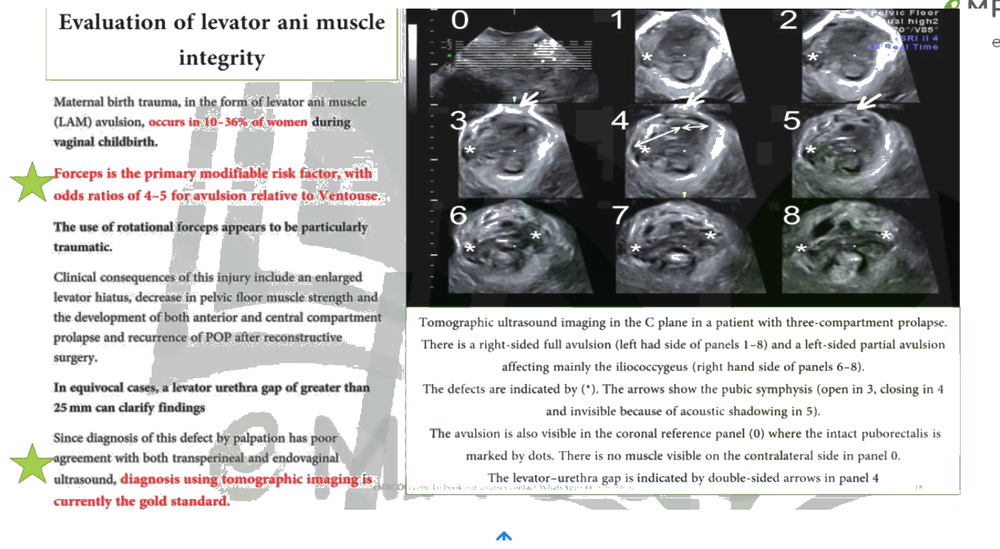
Q21
What is the recommended venous thromboprophylaxis for a 35 yr old patient who underwent elective CS? Her BMI was 24.
- a.No need of thromboprophylaxis
- b.Consider thromboprophylaxis for at least 10 days
- c.At least 6 weeks' postnatal prophylactic LMWH
- d.Consider extending thromboprophylaxis with LMWH
- e.Early mobilisation and avoidance of dehydration✓
Correct answer: e. Early mobilisation and avoidance of dehydration
A woman undergoing elective caesarean section with no additional risk factors (age 35, BMI 24) does not require pharmacological thromboprophylaxis; early mobilisation and avoidance of dehydration are recommended.
Q22
What is the venous thromboprophylaxis recommendation for a G3, 36 years old patient with heterozygous prothrombin gene mutation? Her weight is 98 kg.
- a.5000u dalteparin twice daily
- b.2500u dalteparin once daily
- c.40 mg enoxaparin once daily
- d.60 mg enoxaparin twice daily
- e.7500u dalteparin once daily✓
Correct answer: e. 7500u dalteparin once daily
Heterozygosity for factor V Leiden or prothrombin gene mutation or antiphospholipid antibodies are risk factors for thrombosis in asymptomatic women; parity ≥ 3 and age > 35 years are additional risk factors. Suggested thromboprophylactic LMWH dose by weight (Table 3): for 91–130 kg, dalteparin 7500 units daily (or enoxaparin 60 mg daily).
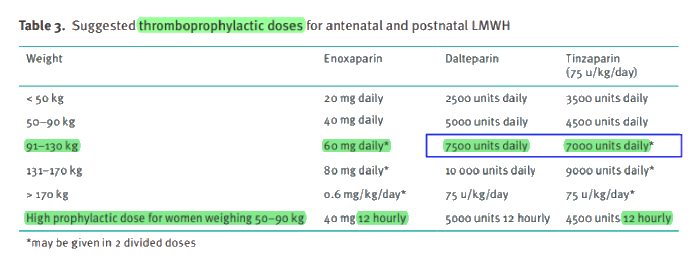
Q23
A long scenario describing a 65 kg patient requiring thromboprophylaxis. Options given were various doses of LMWH.
- a.5000u dalteparin twice daily
- b.2500u dalteparin once daily
- c.40 mg enoxaparin once daily✓
- d.60 mg enoxaparin twice daily
- e.7500u dalteparin once daily
Correct answer: c. 40 mg enoxaparin once daily
Thromboprophylactic LMWH dose is based on booking/early-pregnancy weight (Table 3). For a woman weighing 50–90 kg, the dose is enoxaparin 40 mg daily (or dalteparin 5000 units daily). VTE risk assessment (Appendix III): if total score ≥ 4 antenatally consider thromboprophylaxis from the first trimester; if score 3, from 28 weeks; if score ≥ 2 postnatally, for at least 10 days.
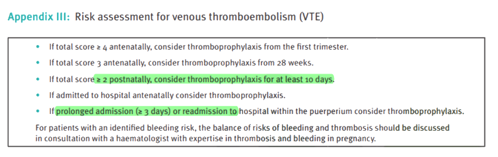
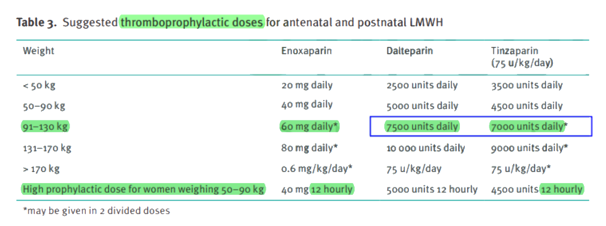
Q24
Antenatal patient presented with hyperemesis gravidarum. Her PUQE score was 10. She continued vomiting despite a combination of first line medications. What action is to be taken?
- a.Ondansetron
- b.Ondansetron and domperidone
- c.Cyclizine and ondansetron
- d.Add Metoclopramide✓
- e.Prochlorperazine
Correct answer: d. Add Metoclopramide
Be careful: if one drug is used you can use a combination of up to 3 medications. When up-titrating antiemetics, add drugs from different classes rather than replacing them, as they may have synergistic effects; some women require a combination of 3+ antiemetics. First line: doxylamine/pyridoxine, cyclizine, prochlorperazine, promethazine, chlorpromazine. Second line: metoclopramide, domperidone, ondansetron. Third line: prednisolone. As the patient failed first-line combination, add a second-line agent (metoclopramide).
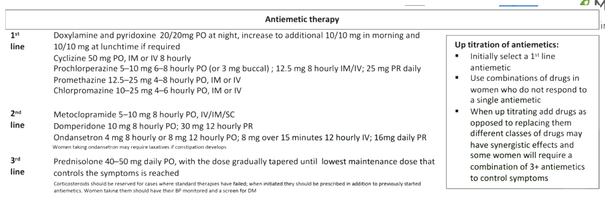
Q25
What is the recommended management of recurrent genital herpes in a woman at 20 weeks of gestation?
- a.Daily suppressive dose from now
- b.Daily suppressive dose from 36 weeks✓
- c.Saline bath
- d.Analgesia
Correct answer: b. Daily suppressive dose from 36 weeks
Recurrences usually resolve within 7–10 days without antiviral treatment. Supportive treatment measures usually suffice (e.g. saline bathing, paracetamol). Vaginal delivery should be anticipated. Consider daily suppressive aciclovir 400 mg TDS from 36 weeks (increased dose compared with standard suppression in non-pregnant patients). Discuss risks, benefits and alternatives with women. Sequential PCR culture during late pregnancy or delivery is not indicated.
Q26
Woman was on combined oral contraceptive pills. She missed the pill on day 10 and had UPSI after 16 hours. She visited the contraceptive clinic the next day. What is the further course recommended for her?
- a.Reassure her, take the missed pill as soon as possible✓
- b.Consider EC, take the missed pill as soon as possible
- c.Consider EC, take the missed pill as soon as possible; condoms should be used or sex avoided until pills have been taken for 7 consecutive days
- d.Consider EC, take the missed pill as soon as possible; condoms should be used or sex avoided until pills have been taken for 7 consecutive days; UPT from 3 wks of last UPSI
Correct answer: a. Reassure her, take the missed pill as soon as possible
A COC pill is missed if it is not taken within 24 hours after it should have been taken. For 1 missed pill (48 to <72 hours since the last pill in the current pack was taken), whether in week 1, 2 or 3: take the missed pill as soon as possible, continue the remaining pills at the usual time, EC is not required and no additional contraceptive precaution is required (provided consistent, correct use previously). Reassure and advise to take the missed pill as soon as possible.
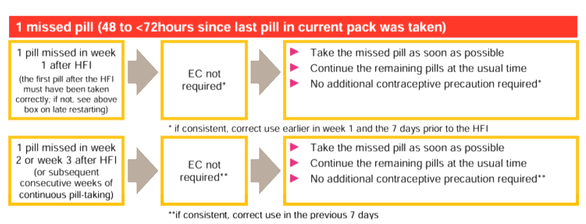
Q27
Antenatal mother who is a school teacher presented with a lacy rash associated with fever. Which of the following is the most probable infection?
- a.Parvovirus infection✓
- b.CMV
- c.Toxoplasmosis
- d.Measles
- e.Rubella
Correct answer: a. Parvovirus infection
Parvovirus B19 infection has a wide range of consequences, from minor febrile illness to erythema infectiosum (fifth disease, slapped cheek syndrome) — a generalised lacy rash illness clinically indistinguishable from rubella — aplastic crises, arthropathy, and persistent infection in the immunocompromised. Recent infection can be confirmed by parvovirus B19-specific IgM on the first serum from the day after rash onset. Management of proven infection includes specialist advice, serial ultrasound scanning and Doppler assessment (fetal anaemia/hydrops), with intrauterine transfusion improving outcome.
Q28
A woman in her 60s was newly diagnosed with lichen sclerosus. What action is to be taken as part of further investigations?
- a.Thyroid profile✓
- b.Fasting blood sugar
- c.OGTT
- d.Wedge biopsy
Correct answer: a. Thyroid profile
Investigation for autoimmune disease if clinically indicated, especially thyroid dysfunction (i.e. thyroid autoantibodies and TSH), as it can commonly be present together with lichen sclerosus.
Q29
HPE of the LLETZ specimen measuring 3x3 cm showed an invasive carcinoma of the cervix with stromal invasion of 1 mm depth, and 6 mm of surrounding tissue showed CIN3. The specimen had a clear margin of >5 mm. What is the stage of cancer cervix?
- a.Stage IA1✓
- b.Stage IA2
- c.Stage IB1
- d.Stage IB2
Correct answer: a. Stage IA1
FIGO staging of cervical cancer: Stage IA is invasive carcinoma diagnosed only by microscopy, with maximum depth of invasion ≤5 mm. IA1 = measured stromal invasion ≤3 mm in depth; IA2 = >3 and ≤5 mm. With 1 mm stromal invasion, this is Stage IA1.
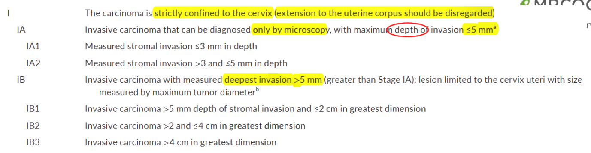
Q30
Staging laparotomy for cancer confined to the right ovary was done. The peritoneal washings show malignant cells. What is the stage of the tumour?
- a.IA
- b.IIB
- c.IC1
- d.IC2
- e.IC3✓
Correct answer: e. IC3
FIGO staging of ovarian cancer, Stage I (tumour confined to ovaries/fallopian tubes): IA = limited to 1 ovary, capsule intact, no malignant cells in washings; IC = limited to 1 or both ovaries with any of: IC1 surgical spill, IC2 capsule ruptured before surgery or tumour on surface, IC3 malignant cells in the ascites or peritoneal washings. Malignant cells in peritoneal washings with tumour confined to one ovary = Stage IC3.
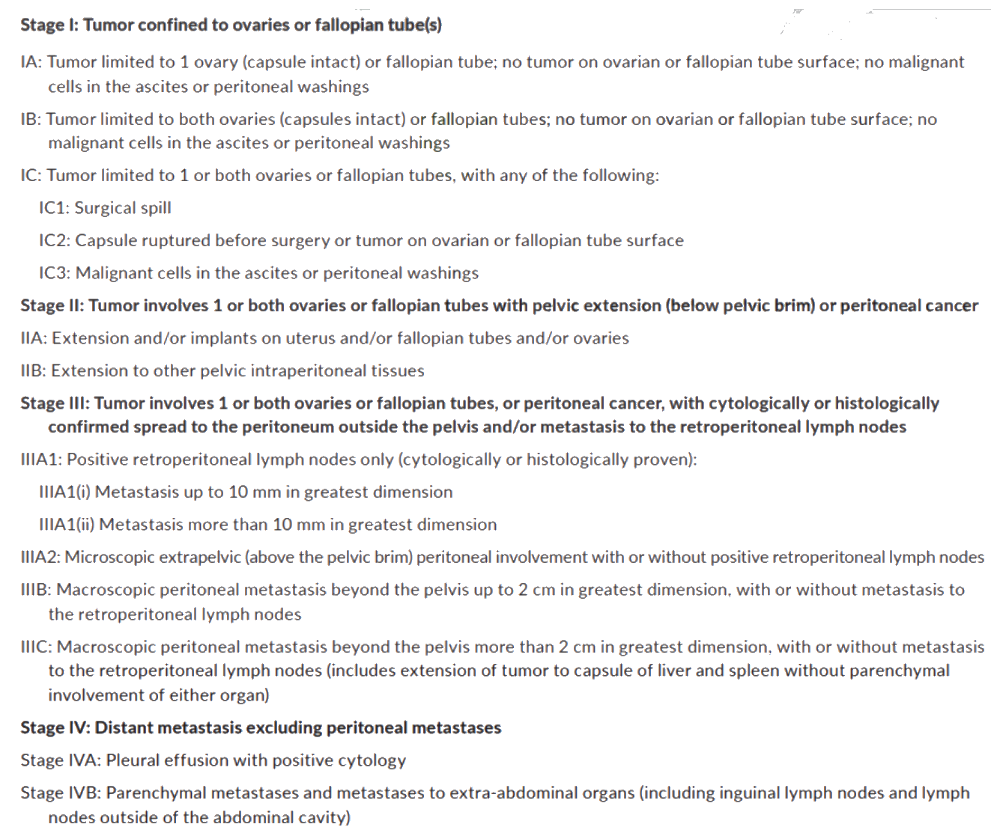
Q31
Patient came to gyne clinic with a pigmented vulval lesion measuring 8 mm. What action would you take?
- a.Incisional biopsy✓
- b.Excisional biopsy
- c.Punch biopsy
Correct answer: a. Incisional biopsy
Diagnosis: incisional biopsy (punch or wedge biopsy) ideally including the edge of a lesion, where there is a transition from normal to abnormal tissue. Biopsies should avoid a central ulcer, since this may not be diagnostic, and should be of adequate depth to allow differentiation between superficially invasive lesions and those with invasion >1 mm, since this informs subsequent management.
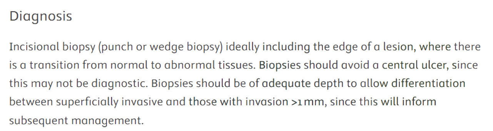
Q32
What is the recommended management to prevent recurrence of Bartholin's abscess in a patient who was treated before?
- a.Word catheter method
- b.Marsupialization✓
- c.Sclerotherapy
- d.Needle aspiration
- e.Jacobi ring catheter
Correct answer: b. Marsupialization
Marsupialization is recommended to prevent recurrence of Bartholin's abscess/cyst. Comparative recurrence rates: balloon Word catheter 12% at 12 months (23% premature expulsion, painful, latex allergy contraindication); Jacobi ring catheter 4% at 12 months (needs two incisions, painful); alcohol sclerotherapy 8–10% within 6–7 months (risk of necrosis, haematoma, dyspareunia); silver nitrate sclerotherapy 3.8% at 2 months (scarring, chemical burns); needle aspiration 13% recurrence (not recommended).
Q33
During a difficult gynaecology surgery a bladder injury was diagnosed intra-operatively and primary repair was done. Postoperative cystoscopy was done and an adequate repair was ascertained. Now the patient presented with urine leak through the vagina. How to investigate her?
- a.Cystoscopy✓
- b.Cystogram
- c.MRI
- d.CT urogram
- e.Intravenous pyelogram
Correct answer: a. Cystoscopy
In late presentations where a fistula is suspected, diagnosis is supported by filling the bladder with dye (e.g. methylene blue) and demonstrating vaginal leakage; MRI provides good tissue contrast and can be diagnostic for a vesico-vaginal fistula. Bladder repairs should be watertight and tested (methylene blue or indigo carmine); a catheter is inserted with continuous drainage for 2 weeks. Before catheter removal, complete repair without leakage should be confirmed by retrograde cystography; if contrast escapes, leave the catheter and repeat in 1 week. Cystoscopic examination can assist in the decision.
Q34
Following a laparoscopic gyne surgery for endometriosis, the patient presented with left-sided flank pain, haematuria and fever. What is the probable cause?
- a.Ureteric injury✓
- b.Bladder injury
- c.Bowel injury
- d.Urinary tract infection
Correct answer: a. Ureteric injury
Any failure to recover as anticipated following major laparoscopic pelvic surgery must raise suspicion of a ureteric injury. Flank pain and tenderness, haematuria, oliguria or watery vaginal loss may be present within the first 48 hours of an acute injury (uroperitoneum).
Q35
Patient from Zambia had no antenatal care. The newborn is noticed to have nasal stuffiness, sabre shin, rashes on palms and soles and hepatosplenomegaly. What is the diagnosis?
- a.Early congenital syphilis✓
- b.Late congenital syphilis
- c.Zika infection
- d.CMV
- e.Parvovirus
- f.Fetal varicella syndrome
Correct answer: a. Early congenital syphilis
Early congenital syphilis (within two years): approximately half of neonates are normal on initial examination. Common manifestations (40–60% have at least one) include rash, haemorrhagic rhinitis (bloody snuffles), generalised lymphadenopathy, hepatosplenomegaly and skeletal abnormalities. Other signs: condylomata lata, vesiculobullous lesions, osteochondritis, periostitis, pseudoparalysis, mucous patches, perioral fissures, non-immune hydrops, glomerulonephritis, neurological/ocular involvement, haemolysis, thrombocytopenia. Late congenital syphilis shows stigmata such as interstitial keratitis, Clutton's joints, Hutchinson's incisors, mulberry molars, saddlenose deformity and sabre shins.
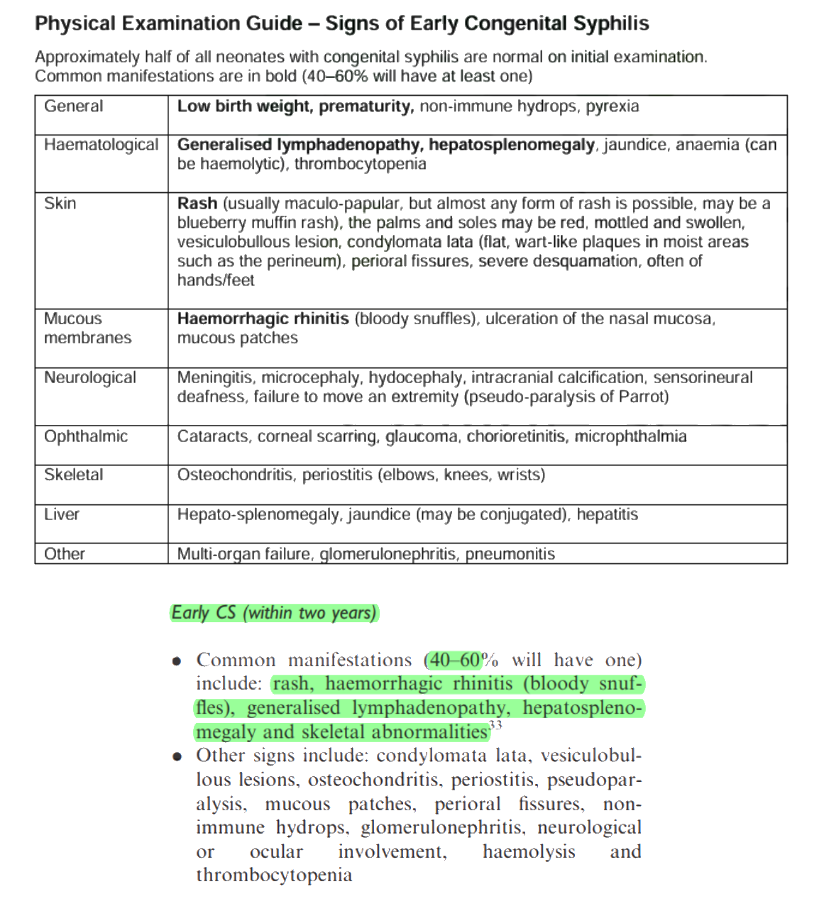
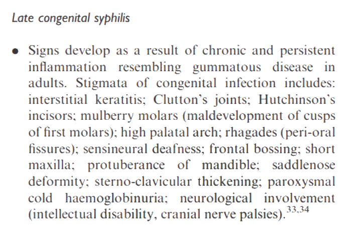
Q36
What is the major cause of mortality in women with epilepsy during pregnancy?
- a.SUDEP✓
- b.Usage of lamotrigine
- c.Drowning
- d.Status epilepticus
- e.Change of medications
Correct answer: a. SUDEP
SUDEP (sudden unexpected death in epilepsy): poorly controlled seizures is the main contributory factor. The higher risk in pregnancy is explained partly by the relatively common use of lamotrigine and reduced serum drug levels with advancing gestation, potentially increasing seizure frequency.
Q37
A prepubescent girl presents with vulvovaginal discharge. Her smear shows gram-negative diplococci. What is the possible cause?
- a.Group A beta-haemolytic streptococci
- b.Staphylococci
- c.Candida
- d.Neisseria✓
- e.Mixed bacterial flora
Correct answer: d. Neisseria
Gram-negative diplococci indicate Neisseria gonorrhoeae. Causes of childhood vulvovaginitis: most common is non-specific with mixed bacterial flora; infective causes include Group A beta-haemolytic streptococcus, Haemophilus influenzae, and Candida (unusual); systemic infections include varicella, measles, rubella, diphtheria, shigella; vulval dermatitis (soap, bubble bath, sandpit, urine/faeces contact, irritants) and foreign bodies are non-infective causes.
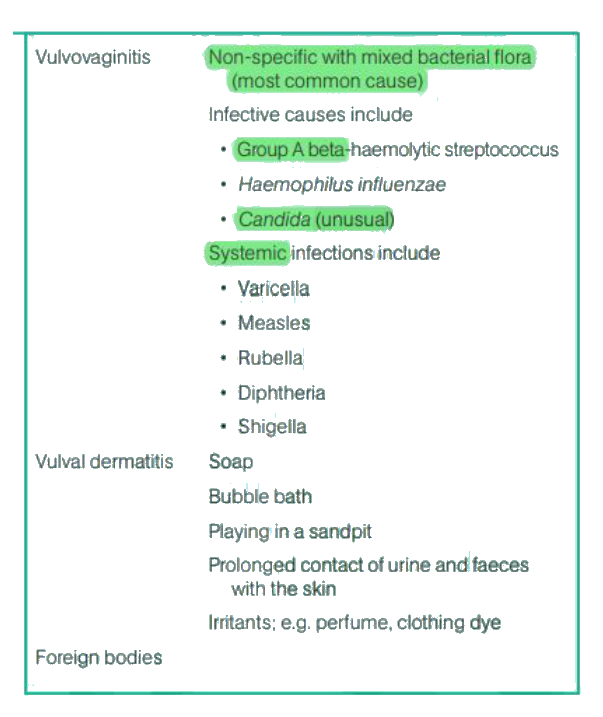
Q38
A labouring woman was exhausted. During vacuum delivery, the cup popped off twice with good descent after each application. Vertex is now at +2. How to proceed further, since she has consented only for vacuum delivery?
- a.Low vacuum application
- b.Midcavity in labour ward
- c.Instrumental delivery trial
- d.Cat 1 CS✓
- e.Cat 2 CS
Correct answer: d. Cat 1 CS
After 2 pop-offs of the vacuum, discontinue vacuum delivery. Although the station is low (+2) and forceps could technically be applied, the patient gave consent only for vacuum, so proceed to caesarean section. Discontinue vacuum-assisted birth if two 'pop-offs' of the instrument occur; consider the consequences of a failed attempt at operative vaginal birth (increased trauma/OASI with sequential instruments, increased maternal morbidity and fetal head impaction at caesarean in second stage).
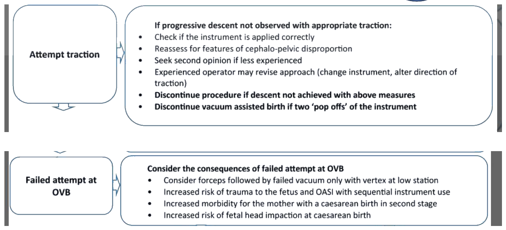
Q39
An antenatal woman presented with retro-orbital headache on and off since her 20th week. Her BMI is 40. Examination showed no focal neurological deficit. Her headache increased with cough. Examination showed features suggestive of 6th nerve palsy. What is the best investigation to confirm the diagnosis?
- a.Fundoscopy
- b.Lumbar puncture✓
- c.MR angiogram
- d.CT
- e.MRI brain
Correct answer: b. Lumbar puncture
Idiopathic intracranial hypertension (IIH) — Modified Dandy criteria: signs/symptoms of raised ICP (headache, nausea, vomiting, transient visual obscurations, papilloedema); no localising neurological signs except unilateral/bilateral sixth-nerve paresis; CSF shows increased pressure but no cytological/chemical abnormality; normal to small symmetric ventricles. The lumbar CSF opening pressure should be >250 mmH2O in the lateral decubitus position to diagnose IIH — CSF opening pressure is vital to confirm the diagnosis. Neuroimaging (CT adequate) is used to exclude other causes such as hydrocephalus.
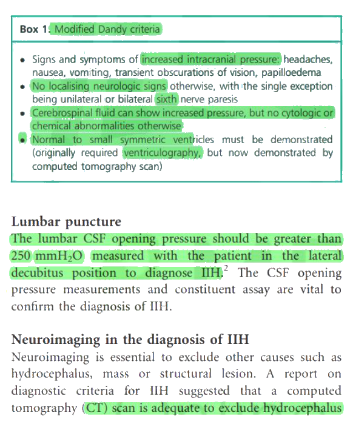
Q40
An antenatal patient came with a history of headache which started in week 20. Her BMI is 37. Examination showed no focal neurological symptoms. What is the probable cause?
⚠ Answer not highlighted in source — inferred from the explanation.
- a.Benign intracranial hypertension✓
- b.Migraine
- c.Tension headache
- d.SAH
Correct answer: a. Benign intracranial hypertension
There is not enough information in the question, but with a raised BMI and headache the probable cause is benign intracranial hypertension (idiopathic intracranial hypertension), especially if there is papilloedema and all imaging is normal. (Note: the correct option was not highlighted in the source; it is inferred from the accompanying note.)
Q41
Patient presented with acute RIF pain. An ultrasound showed a right-sided ovarian mass. Consent was obtained for laparoscopy + open and biopsy if needed. During laparoscopy, on visualising the peritoneal cavity, this was found to be a pedunculated tortuous hyperaemic fibroid approaching the right ovary. How to proceed with the management?
- a.Do as consented
- b.Remove the fibroid
- c.Detorsion, abandon the procedure✓
- d.Remove the ovary
- e.Follow up in gyne clinic
Correct answer: c. Detorsion, abandon the procedure
Unexpected pathology: if unexpected disease is found at operation for which additional procedures are indicated, treatment may only be performed if the woman was made aware and consented to it beforehand; if such a preoperative discussion has not occurred, additional treatment should not take place. Where a complication that is itself life-threatening occurs, corrective surgery must proceed. Otherwise it is unwise to proceed with additional procedures without discussing with the woman. Here, detorse and abandon the procedure.
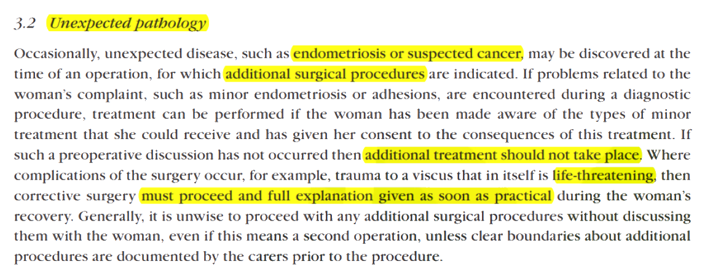
Q42
A pregnant patient is brought to the ER with multiple trauma owing to a road traffic accident. How to investigate?
- a.MRI
- b.Full body X-ray
- c.Full body CT✓
- d.MRI with IV contrast
Correct answer: c. Full body CT
Q43
A surgeon was doing an elective laparoscopic cholecystectomy. During surgery, a complex 10 cm ovarian mass was visualised on the left ovary. How to proceed in this situation?
- a.Do as consented✓
- b.Abandon procedure
- c.Remove
- d.Seek another opinion
- e.Take a biopsy
Correct answer: a. Do as consented
Generally, it is unwise to proceed with any additional surgical procedures without discussing them with the woman, even if this means a second operation, unless clear boundaries about additional procedures were documented and consented before the procedure. Complete the operation as consented (cholecystectomy) and plan the ovarian mass separately.
Q44
You are doing endometriosis surgery for a patient with severe adhesions. She consented for laparotomy if needed. During removal of the (x) ovary from (y) endometriosis, there was brisk bleeding and the patient gets worse. Ovarian artery injury was suspected.
- a.Wait for your colleague
- b.Wait for second opinion
- c.Try to separate x from y
- d.Laparotomy and pan to remove y
- e.Removal of x to stop bleeding✓
Correct answer: e. Removal of x to stop bleeding
Q45
A patient who is a Jehovah's Witness is prepped for laparoscopic ovarian cystectomy. She signed an advance directive mentioning no blood transfusion. Following the surgery, the patient collapsed in the ward. Her examination showed signs of intra-abdominal collection. The patient is drowsy. How to proceed?
- a.Perform a laparotomy in best-interest principle✓
- b.Adhere to advanced directive
- c.Need written consent from patient
- d.Patient consent is valid
- e.Verbal consent from patient
- f.Written consent from husband
- g.Wait for legal board for further treatment
- h.Patient consent is not valid
Correct answer: a. Perform a laparotomy in best-interest principle
Attempt to stop the bleeding and manage the acute intra-abdominal haemorrhage (laparotomy) under the best-interest principle, while respecting the valid advance directive refusing blood — so NO blood transfusion is given.
Q46
A 15 year old girl and her 18 year old partner came for termination of an unwanted pregnancy. The girl lives with her father and occasionally visits her mother. She doesn't wish to tell her parents. How to proceed?
- a.Proceed termination with the girl's consent if she is deemed to have capacity✓
- b.Encourage her to tell the parents
- c.Consent from partner
- d.Consent from parents
- e.Legal consent
Correct answer: a. Proceed termination with the girl's consent if she is deemed to have capacity
If the young person is deemed to have capacity (Gillick competent), proceed with termination using her own consent. Parental involvement should be encouraged but cannot be required if she is competent and refuses.
Q47
What is the risk of offspring being affected when both parents are carriers of cystic fibrosis?
- a.All the offspring
- b.½
- c.¼✓
- d.All are carriers
Correct answer: c. ¼
Cystic fibrosis is autosomal recessive. When both parents are carriers (Cc × Cc), the Punnett square gives CC (1/4 unaffected), Cc and Cc (1/2 carriers) and cc (1/4 affected). Therefore the risk of an affected child is 1/4.
Q48
A premenopausal patient comes to the gyne emergency with abdominal pain and USG revealed an ovarian cyst with mixed echogenicity measuring 8x7x8 cm. What is the best management?
- a.Antibiotics
- b.Conservative management
- c.Lap cystectomy✓
- d.Laparotomy
- e.Ovarian cystectomy
Correct answer: c. Lap cystectomy
A persistent large (8 cm) complex/mixed-echogenicity ovarian cyst in a premenopausal woman presenting with pain is best managed by laparoscopic cystectomy.
Q49
How many more women would need to undergo peripartum hysterectomy if caesarean section was done compared to a vaginal delivery?
- a.65 more women / 100000✓
- b.200 more women / 100000
- c.24 more women / 100000
- d.80 more women / 100000
- e.150 more women / 100000
Correct answer: a. 65 more women / 100000
RCOG consent data (Table 1, outcomes more likely with caesarean birth): about 65 more women per 100,000 who had a caesarean birth would be expected to have a peripartum hysterectomy (about 200 per 100,000 with caesarean vs about 100 per 100,000 with vaginal birth), so for about 99,935 women per 100,000 the outcome was the same irrespective of mode of birth.
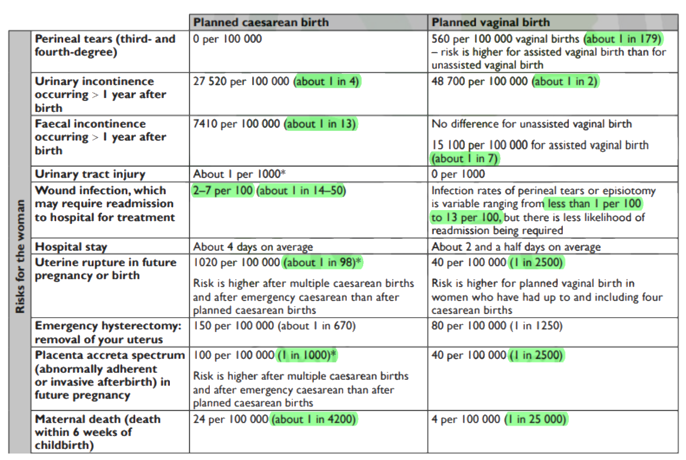
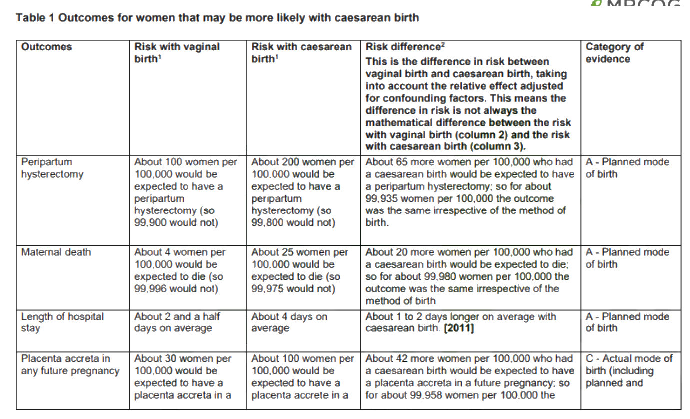
Q50
Patient was on warfarin for AF. Her INR is maintained at 2.5. She is planned for polypectomy. Preoperatively, the INR is 1.6. How to proceed in this situation?
- a.Give Phytomenadione✓
- b.Repeat INR and review
- c.Defer operation until proper bridging
- d.Proceed for surgery
Correct answer: a. Give Phytomenadione
Warfarin should be stopped 5 days before elective surgery with an INR check ideally the day before surgery: if the INR is >1.5 the day before surgery, phytomenadione (vitamin K) should be given. Here the INR is 1.6 (>1.5), so give phytomenadione. LMWH bridging is considered in those with high VTE risk. Restart warfarin when haemostasis is achieved (low bleeding risk ~12–24 h; high bleeding risk LMWH not until 48 h after surgery).
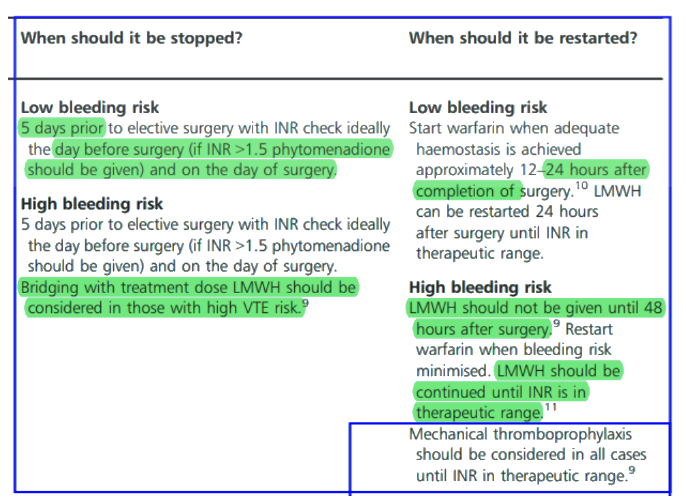
Q51
Antenatal haemoglobinopathy screening: the woman is of UK origin. Her partner's family of origin is not known. What is the appropriate action?
- a.No further tests
- b.NIPT
- c.CVS/amnio
- d.Newborn screening
- e.Paternal screening
- f.Parental karyotyping
- g.Maternal screening✓
Correct answer: g. Maternal screening
When the father's origin is unknown (or from a high-prevalence area), this is considered high risk. Offer a blood test for the mother (maternal screening) to identify whether she is a carrier. Sickle cell screening: Family Origin Questionnaire → if high risk, HPLC → if carrier, test father → if both carriers, offer prenatal invasive testing (CVS/amniocentesis). Thalassaemia screening is offered to all pregnant women in the UK (MCH <27 pg → HPLC → test father → invasive testing if both carriers).
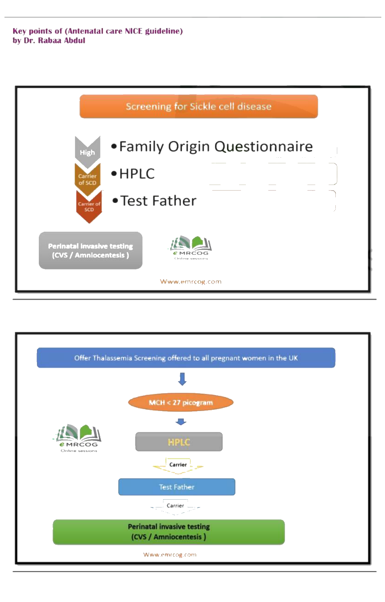
Q52
Parents are carriers for CAH (congenital adrenal hyperplasia). What is the risk of offspring inheriting the disease?
- a.1 in 2
- b.1 in 4✓
- c.3 in 4
- d.No risk of offspring inheriting the disease
Correct answer: b. 1 in 4
CAH is autosomal recessive. When both parents are carriers (Aa × Aa), the Punnett square gives AA (1/4 unaffected), Aa and Aa (1/2 carriers) and aa (1/4 affected). The risk of an affected child is 1 in 4.
Q53
Woman presented with features of overactive bladder. Her urodynamic findings confirmed her symptoms. Which of the following is representative of detrusor overactivity (DO)?
- a.Evidence of leak with provocation, with no rise in Pdet
- b.Provoked or unprovoked rise in detrusor pressure that is abnormal and correlates with leak: positive flow during filling / Pabd stable / Pdet increase 2–27 / leakage +/− / normal flow✓
- c.Rise in detrusor pressure during filling, but the pressure falls to normal when filling is stopped
Correct answer: b. Provoked or unprovoked rise in detrusor pressure that is abnormal and correlates with leak: positive flow during filling / Pabd stable / Pdet increase 2–27 / leakage +/− / normal flow
Detrusor overactivity (DO) is characterised by involuntary detrusor contractions during the filling phase (spontaneous or provoked, amplitudes >15 cm H2O) that are abnormal and correlate with leak. Phasic DO = waves of contraction that may or may not be associated with incontinence; terminal DO = a single involuntary contraction at cystometric capacity; cough-associated DO = onset immediately following a cough pressure peak. (Option c describes poor detrusor accommodation; option a describes urodynamic stress incontinence.)
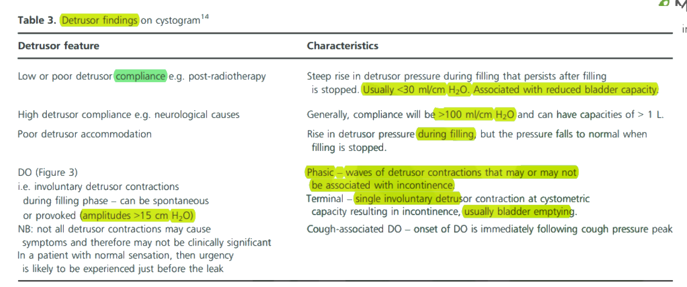
Q54
Patient underwent mid-urethral tape in the past for SUI. Following her surgery she was symptom free for some time, and now presents again with SUI. No residual urine on investigations. What is the next step in her management?
- a.Urodynamics✓
- b.Colposuspension
- c.TVT again
- d.Bulking agents
- e.Cystoscopy
Correct answer: a. Urodynamics
For recurrent stress urinary incontinence after a previous continence procedure, the best investigation is urodynamics; subsequent management is often with urethral bulking agents.
Q55
A pregnant woman at 7 weeks amenorrhoea came with complaint of spotting. USG shows a thickened endometrium with no intrauterine/extrauterine gestational sac (pregnancy of unknown location). On hCG follow up, the rise was 360 iu from 340 iu in 48 hours. How to proceed now?
- a.hCG after 1 week
- b.US after 2 weeks
- c.TVS after 1 week
- d.TVS after 2 weeks
- e.Urgent review in early pregnancy unit within 24 hr✓
Correct answer: e. Urgent review in early pregnancy unit within 24 hr
For a woman with a pregnancy of unknown location and a decrease in serum hCG of less than 50%, or an increase of less than 63% over 48 hours, refer her for clinical review in the early pregnancy assessment service within 24 hours. A rise from 340 to 360 iu is a sub-optimal rise (<63%), so urgent EPU review within 24 hours is required (risk of ectopic).
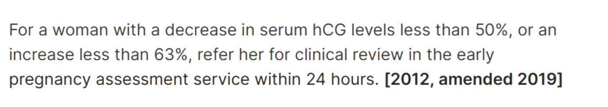
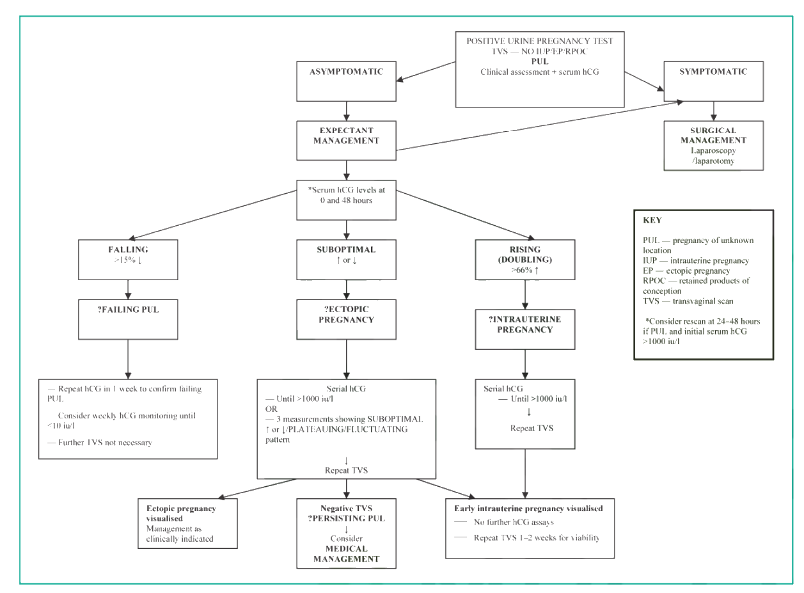
Q56
What is the initial management in a patient with a large cystocele and complaint of SUI?
- a.PMFT (pelvic floor muscle training)✓
- b.Urodynamic test
- c.Pessary
Correct answer: a. PMFT (pelvic floor muscle training)
Initial (first-line) management is pelvic floor muscle training (PMFT).
Q57
What is the management of a persistent simple ovarian cyst in a postmenopausal woman? Her RMI is <200 and CA125 is normal.
- a.Bilateral salpingo-oophorectomy
- b.Laparoscopic BSO
- c.TAH with BSO
- d.Discharge from follow up
- e.Repeat assessment in four months✓
Correct answer: e. Repeat assessment in four months
Asymptomatic, simple, unilateral, unilocular ovarian cysts less than 5 cm in diameter have a low risk of malignancy. With normal serum CA125 (RMI <200), they can be managed conservatively with a repeat evaluation in 4–6 months (CA125, TVS ± TAS). It is reasonable to discharge after 1 year if the cyst remains unchanged or reduces in size with normal CA125, considering the woman's wishes and surgical fitness.

Q58
A postmenopausal woman was referred for a 4.5 cm simple ovarian cyst on CT scan, found during investigation for a surgical cause. CA125 is 17. What is the most appropriate management?
- a.Laparotomy
- b.No further management
- c.Ultrasound and CA125 after 4 months✓
- d.Ultrasound and CA125 after 12 months
- e.Ultrasound after 4-6 months
- f.Bilateral salpingo-oophorectomy
Correct answer: c. Ultrasound and CA125 after 4 months
Asymptomatic, simple, unilateral, unilocular ovarian cysts <5 cm with normal CA125 have a low risk of malignancy in postmenopausal women and can be managed conservatively with repeat assessment (ultrasound and CA125) in 4–6 months. Discharge after 1 year if unchanged/reduced with normal CA125.
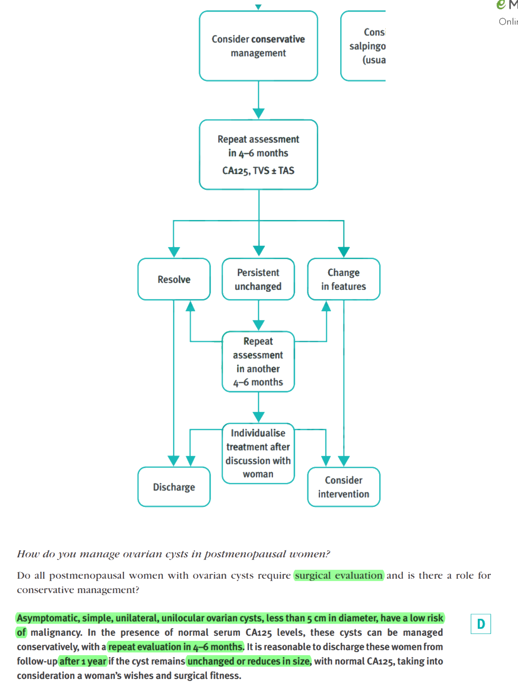
Q59
What is the management of a simple ovarian cyst in a 23-year-old woman? The cyst measures 4.5 cm and is an incidental finding. She has no complaints so far.
- a.Laparotomy
- b.Reassure, no further management✓
- c.Ultrasound and CA125 after 4 months
- d.Ultrasound and CA125 after 12 months
- e.Bilateral salpingo-oophorectomy
- f.Yearly assessment
Correct answer: b. Reassure, no further management
Women with small (less than 50 mm diameter) simple ovarian cysts generally do not require follow-up, as these cysts are very likely to be physiological and almost always resolve within 3 menstrual cycles. Cysts of 50–70 mm should have yearly ultrasound follow-up; larger simple cysts should be considered for further imaging (MRI) or surgical intervention.
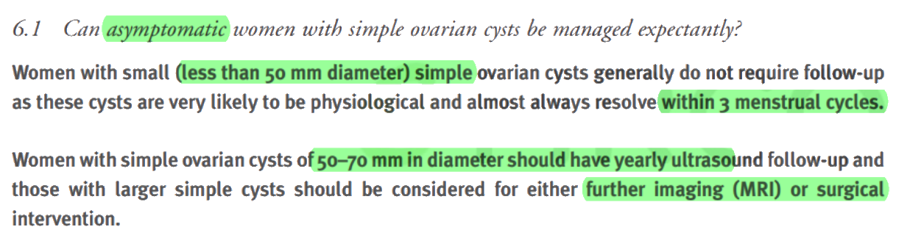
Q60
Patient presents with a history of reduced fetal movements. Her CTG shows a baseline of 140 bpm, normal variability, showing repetitive variable decelerations with concerning characteristics. Categorize the CTG.
- a.Normal
- b.Pathological✓
- c.Suspicious
- d.Reassuring
- e.Non-reassuring
Correct answer: b. Pathological
Repetitive variable decelerations with concerning characteristics represent a pathological feature; a CTG with a pathological feature is classified as pathological.
Q61
Patient presented with spontaneous rupture of membranes and regular contractions at term. Her examination revealed 4 cm cervical dilatation. 4 hours later, vaginal examination showed 5 cm cervical dilatation. Her CTG is normal. How to manage?
- a.Reassess in 2 hours✓
- b.Reassess in 4 hrs
- c.Start oxytocin
- d.Perform cat 2 CS
- e.Perform cat 1 CS
Correct answer: a. Reassess in 2 hours
Advise all women with suspected delay in the established first stage of labour to have a vaginal examination 2 hours later, and diagnose delay if progress is less than 1 cm. Here progress was 1 cm over 4 hours, so reassess in 2 hours.
Q62
Patient presents in labour at term gestation. She has been diagnosed with cardiac disease in the past — valvular heart disease with functional classification NYHA class 2. How to manage her?
- a.Allow normal vaginal delivery✓
- b.Cut short second stage by vacuum delivery
- c.Cut short second stage by forceps delivery
- d.CS under GA
- e.CS under spinal
- f.CS under epidural
Correct answer: a. Allow normal vaginal delivery
Most women with well-compensated valvular heart disease (NYHA class 1–2) can be allowed a normal vaginal delivery; caesarean section is reserved for obstetric indications.
Q63
Epileptic patient on topiramate came for contraceptive advice. What is the best option for her?
- a.DMPA✓
- b.Implant
- c.Progesterone-only pills
- d.Barrier method
Correct answer: a. DMPA
Topiramate has enzyme-inducing activity at higher doses; as it is also a teratogen and there is wide inter-individual variability, FSRH advises treating topiramate as a potential enzyme inducer regardless of dose. Recommended contraceptive options are Cu-IUD, LNG-IUS or DMPA (plus condoms). Among the options given, DMPA is the best choice.
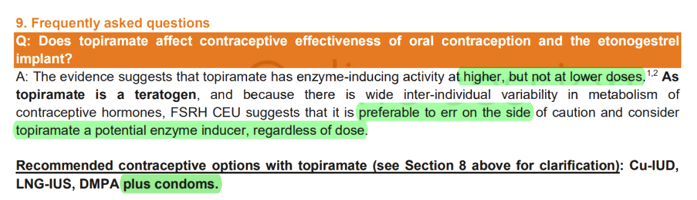
Q64
What is the contraceptive option with the least failure rate?
- a.Tubal ligation
- b.Vasectomy
- c.Implant✓
- d.DMPA
- e.LNG IUS
Correct answer: c. Implant
The progestogen-only implant has the lowest failure rate of the listed methods, at approximately 0.05% with both typical and perfect use.
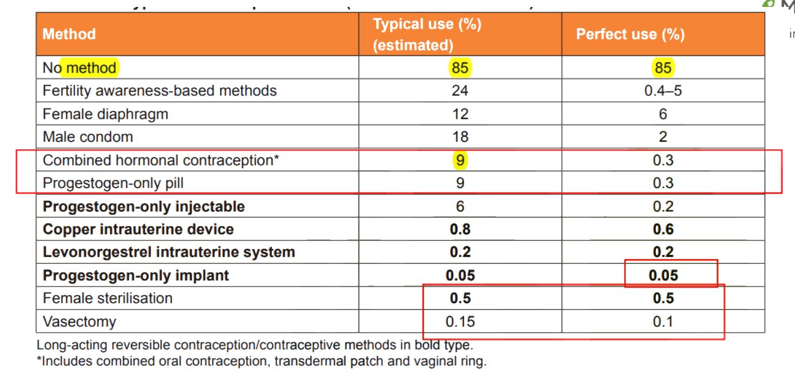
Q65
Woman who was on the combined contraceptive ring came with a history of the ring missing for the past 48 hours in the second week following the hormone-free interval. She has a history of UPSI 1 day back. How to counsel her?
- a.EC is not required
- b.Consider EC
- c.Consider EC if correct use in the past 1 week
- d.Skip HFI, no need of EC
- e.EC is not required, insert ring ASAP, avoid intercourse for 7 days✓
Correct answer: e. EC is not required, insert ring ASAP, avoid intercourse for 7 days
For unscheduled ring removal of ≥48 hours in week 2 or 3 after the HFI, if there was correct consistent use in the previous 7 days, emergency contraception is not required. Insert the ring as soon as possible, keep it in until the scheduled removal day, and use condoms or avoid sex until the new ring has been used for 7 consecutive days.
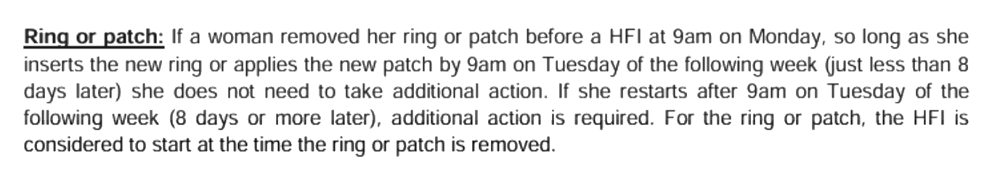
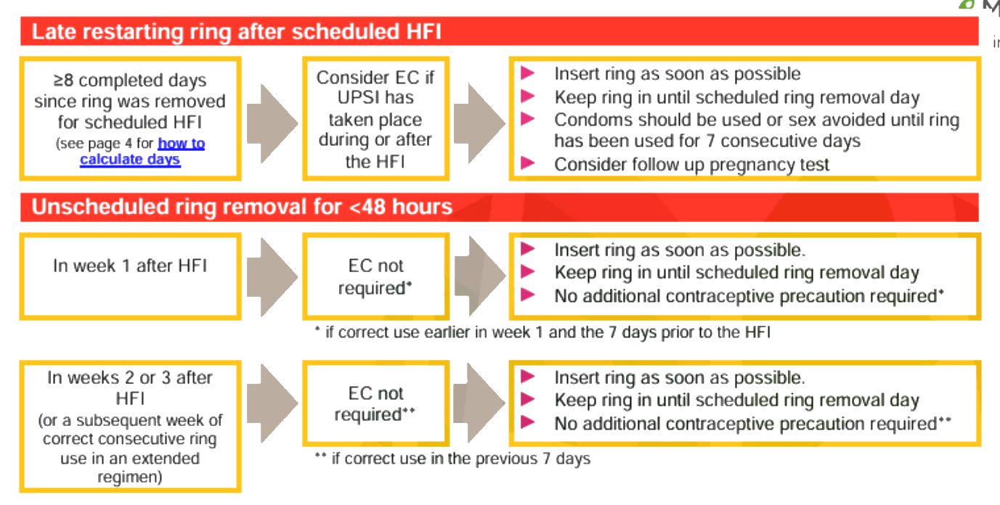
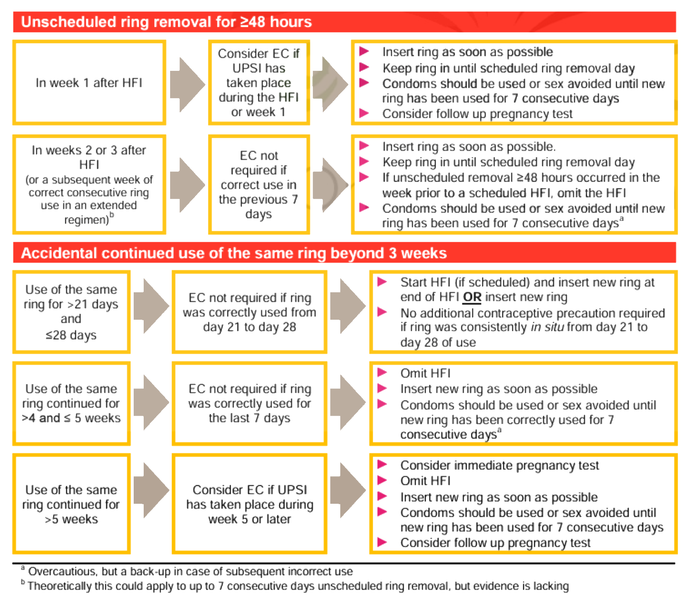
Q66
Epileptic patient on carbamazepine needs emergency contraception. She has a past history of PID. What to offer her?
- a.Copper T✓
- b.LNG EC
- c.UPA EC
- d.Double dose LNG EC
- e.Double dose UPA EC
Correct answer: a. Copper T
Carbamazepine is an enzyme inducer that reduces the effectiveness of oral emergency contraception, so the copper IUD (Copper T) is the most effective option. Past PID (with no current STI risk factor) is UKMEC category 1 for the Cu-IUD, so it is not contraindicated.
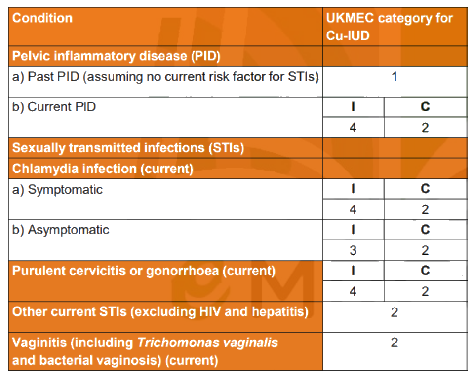
Q67
Patient presents with loin pain and haematuria on the 13th postoperative day following TAH. Her urine output was normal.
- a.Ureteric injury✓
- b.Bladder injury
- c.Urinary tract infection
Correct answer: a. Ureteric injury
Delayed loin pain and haematuria after hysterectomy with preserved urine output suggests a ureteric injury.
Q68
Following a laparoscopic surgery, a superficial burn was noticed on the patient's thigh. The surgical instrument included a hybrid cannula. What is the possible cause?
- a.Direct injury
- b.Insulation failure
- c.Capacitative coupling✓
Correct answer: c. Capacitative coupling
With a hybrid cannula (mixed metal and plastic), even with intact insulation, if an open circuit is formed capacitive coupling increases and a trocar-site burn can occur. Other electrosurgical injuries include direct application (lateral thermal spread — the commonest), antenna coupling (a form of capacitive coupling), and direct coupling (active electrode touching another metal instrument).
Q69
Patient presents with paraesthesia and pain in the anterior and posterolateral thigh following TAH. Select the nerve involved.
- a.Obturator nerve
- b.Femoral nerve
- c.Sciatic nerve
- d.Lateral cutaneous nerve of the thigh✓
- e.Iliohypogastric nerve
Correct answer: d. Lateral cutaneous nerve of the thigh
The lateral cutaneous nerve of the thigh (L2–L3) emerges from the lateral border of psoas, crosses the iliac fossa anterior to iliacus and enters the thigh posterior to the lateral end of the inguinal ligament. Injury during pelvic surgery causes paraesthesia and pain in the anterior and posterolateral thigh (meralgia paraesthetica).
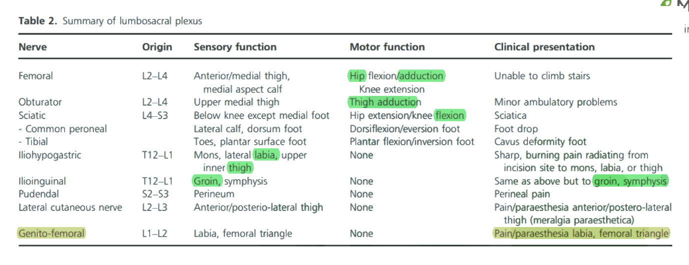
Q70
Patient presents with foot drop and inability to dorsiflex her foot following TAH. Name the nerve involved.
- a.Sciatic
- b.Common peroneal✓
- c.Tibial
- d.Lateral cutaneous nerve
- e.Genitofemoral
Correct answer: b. Common peroneal
Foot drop with inability to dorsiflex the foot indicates a common peroneal (fibular) nerve injury.

Q71
Patient came back to the UK following oocyte retrieval. 25 oocytes were retrieved. The next morning, she wakes with severe right-sided abdominal pain associated with nausea and vomiting. She also complains of lightheadedness. What is the probable cause?
- a.OHSS✓
- b.Ovarian torsion
- c.Ovarian rupture
- d.Appendicitis
- e.PID
Correct answer: a. OHSS
A high oocyte yield (25 retrieved) is a major risk factor for ovarian hyperstimulation syndrome (OHSS). Severe abdominal pain, nausea, vomiting and lightheadedness (from fluid shifts/hypovolaemia) shortly after retrieval indicate OHSS.
Q72
According to the latest MBRRACE, what is the most common cause of direct maternal death?
- a.Suicide
- b.VTE✓
- c.Cardiac cause
- d.Preeclampsia
- e.Bleeding
Correct answer: b. VTE
Thrombosis and thromboembolism (blood clots, ~16% of deaths) remains the leading cause of direct maternal death during or up to six weeks after the end of pregnancy. (Maternal suicide is the leading cause of direct death between 6 weeks and a year postpartum, and mental-health causes account for nearly 40% of deaths in that later period.)
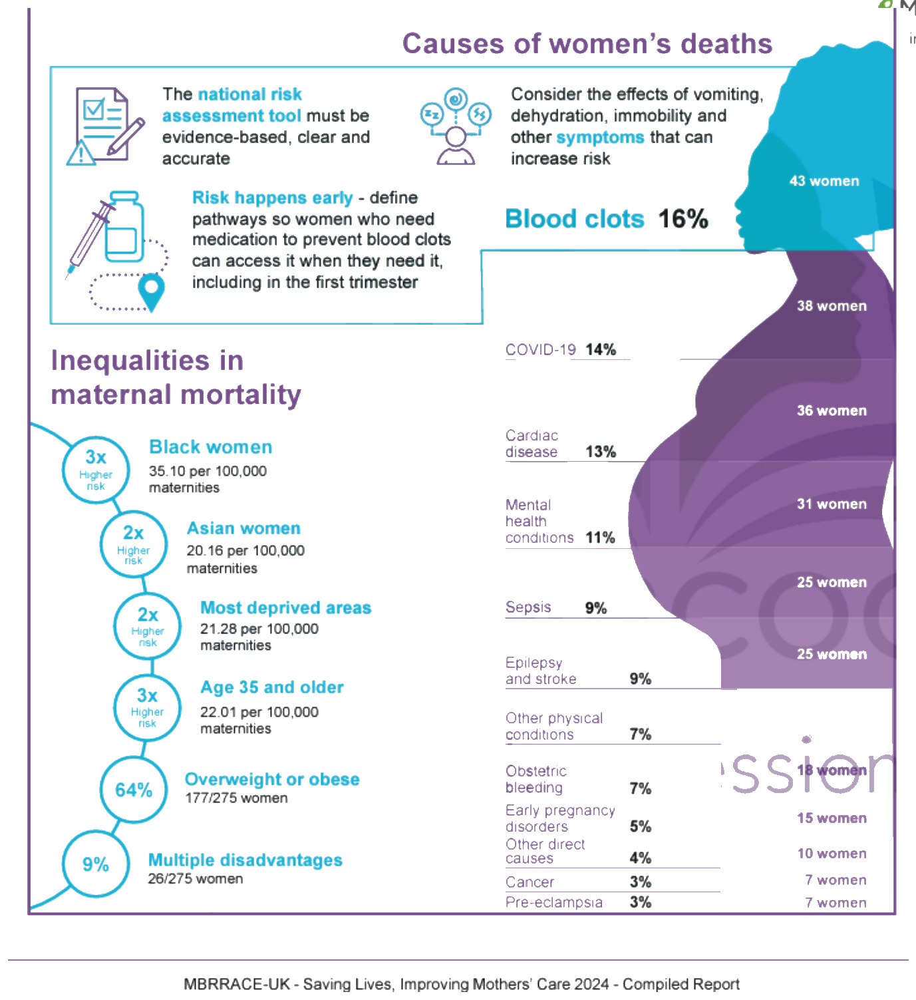
Q73
A couple was evaluated for subfertility. The male partner's evaluation showed azoospermia and low FSH. What is the possible cause?
- a.Kallmann syndrome✓
- b.Anabolic steroid
- c.Klinefelter syndrome
- d.CBAVD
Correct answer: a. Kallmann syndrome
Azoospermia with a LOW FSH indicates secondary (hypogonadotropic) hypogonadism. Kallmann syndrome is a congenital isolated gonadotropin (GnRH) deficiency causing low FSH/LH and impaired spermatogenesis. (Klinefelter and anabolic steroid abuse cause different hormonal pictures; CBAVD causes obstructive azoospermia with normal FSH.)
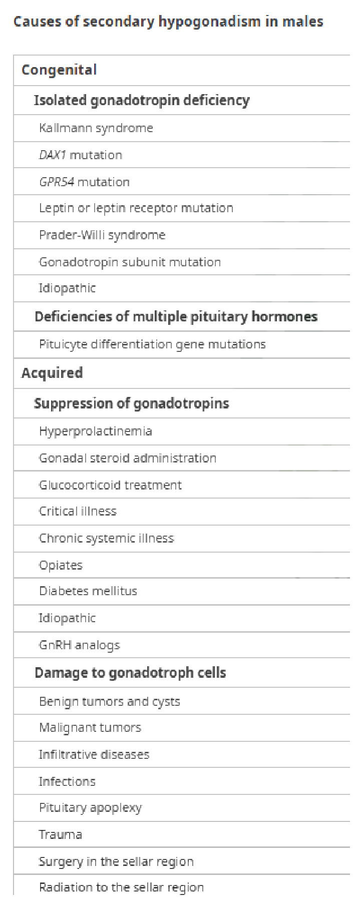
Q74
Couple was evaluated for infertility and planned for IVF. Male partner evaluation showed a severe deficit in sperm quantity: 4–5 million sperm per millilitre. Female partner evaluation was normal. What is the best option recommended for the couple?
- a.IUI with partner sperm
- b.IUI with donor sperm
- c.IVF
- d.IVF-ICSI✓
- e.IVF with donor sperm
Correct answer: d. IVF-ICSI
The recognised indications for ICSI include severe deficits in semen quality and obstructive or non-obstructive azoospermia. With severe oligospermia, IVF with ICSI is recommended. Before ICSI, appropriate investigations and consideration of relevant genetic issues should be undertaken.
Q75
What is the antihypertensive of choice in a postnatal patient? She is a known asthmatic with no history of recent exacerbations. She had stopped nifedipine due to drug allergy.
- a.Enalapril✓
- b.Thiazide
- c.Amlodipine
Correct answer: a. Enalapril
Enalapril (an ACE inhibitor) is a suitable postnatal antihypertensive and is compatible with breastfeeding. Bronchospasm with enalapril is uncommon (≥1/1,000 to <1/100); cough is common. Contraindications include the 2nd and 3rd trimesters of pregnancy, hypersensitivity/angioedema with ACE inhibitors, and co-administration with aliskiren in diabetes or renal impairment (GFR <60).
Q76
Scenario describing bladder pain syndrome impacting on the patient's quality of life. What is the first-line management of bladder pain syndrome?
- a.Amitriptyline✓
- b.Analgesics
- c.Cimetidine
- d.Oral cyclosporin
- e.Botox
Correct answer: a. Amitriptyline
Oral amitriptyline (or cimetidine) may be considered when first-line conservative treatments have failed; amitriptyline is the first-line oral pharmacological option for bladder pain syndrome.
Q77
Genital examination of a patient showed the presence of genital piercing. Identify the type of FGM.
- a.FGM Type 1
- b.FGM Type 2
- c.FGM Type 3
- d.FGM Type 4✓
- e.Not an FGM
Correct answer: d. FGM Type 4
WHO classification of FGM — Type 1: partial/total removal of the clitoris and/or prepuce (clitoridectomy). Type 2: removal of the clitoris and labia minora ± labia majora (excision). Type 3: narrowing of the vaginal orifice with a covering seal (infibulation). Type 4: all other harmful procedures for non-medical purposes, e.g. pricking, piercing, incising, scraping and cauterization. Genital piercing is Type 4.
Q78
An antenatal woman with Anti-K (Kell) antibodies was on follow up. Her evaluation showed no fetal anaemia, MCA PSV normal, no hydrops, delivered vaginally at term. She should be counselled that the newborn baby is at risk of:
- a.Early anaemia✓
- b.Early jaundice within 24 hours of delivery
- c.Late anaemia
- d.Late jaundice
Correct answer: a. Early anaemia
Kell (anti-K) antibodies suppress fetal/neonatal erythropoiesis rather than causing marked haemolysis, so the newborn is at risk of early neonatal anaemia (with relatively little jaundice).
Q79
You are teaching the midwife about normal labour and episiotomy. She wanted to know the maximum dose of 1% lignocaine without vasopressor for episiotomy for a woman weighing 80 kg.
- a.1 mg/kg
- b.2 mg/kg
- c.3 mg/kg✓
- d.5 mg/kg
- e.7 mg/kg
Correct answer: c. 3 mg/kg
Maximum dose of lidocaine (lignocaine) without adrenaline is 3 mg/kg (6 mg/kg with adrenaline). 1% = 10 mg/ml. For an 80 kg woman this is a maximum of 240 mg (24 ml of 1%).
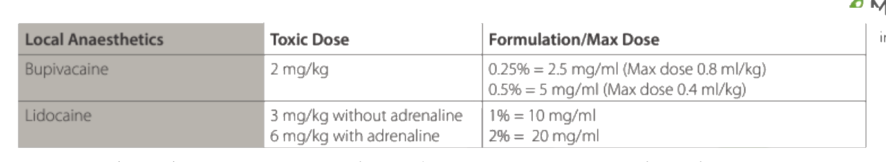
Q80
What is the most common vessel injured in primary port insertion during laparoscopy?
- a.Inferior epigastric artery
- b.Right common iliac artery
- c.Left common iliac artery
- d.Aorta✓
- e.Superficial epigastric artery
Correct answer: d. Aorta
With midline (umbilical) primary port entry, the major retroperitoneal vessels — the aorta and iliac vessels — are at risk. As the aortic bifurcation occurs just to the left of the midline, the right common iliac artery is at higher risk than the left during instrumentation at the umbilicus; keeping the Veress needle and trocar in the midline minimises this risk.
Q81
What is the most common vessel injured in port insertion during laparoscopy (secondary/accessory ports)?
- a.Inferior epigastric artery✓
- b.Right common iliac artery
- c.Left common iliac artery
- d.Aorta
- e.Superficial epigastric artery
Correct answer: a. Inferior epigastric artery
The most common trocar-induced abdominal wall injury is haemorrhage of the epigastric (inferior epigastric) vessels — a serious and potentially preventable complication of accessory port insertion.
Q82
What is the most common injury in gynaecological laparoscopy?
- a.Bladder✓
- b.Bowel
- c.Blood vessels
- d.Ureter
Correct answer: a. Bladder
Urinary tract injuries pooled together are the most common major complication of laparoscopic pelvic surgery, with bladder injury at the top of the list of visceral damage (reported rates 0.02%–8.3%). The overall rate of major complications is about 1.4/1000 procedures (intestinal 0.6/1000, urological 0.3/1000, vascular 0.1/1000).
Q83
What is the risk of bladder injury in diagnostic laparoscopy planned for chronic pelvic pain?
- a.1 in 100
- b.2 in 1000✓
- c.3-8 / 10000
- d.14 in 100
- e.4 in 100
Correct answer: b. 2 in 1000
The overall risk of serious complications from diagnostic laparoscopy is approximately 2 in 1000 women (uncommon). This includes damage to the bowel, bladder, ureters, uterus or major blood vessels that would require immediate repair by laparoscopy or laparotomy.
Q84
What is the management of a patient presenting with PPROM at 29 weeks? Her examination showed normal fetal heart sounds and an uneffaced cervix.
⚠ Answer not highlighted in source — inferred from the explanation. Source did not highlight an option for this question; the correct answer (steroid + erythromycin) is taken from the explanation, which specifies erythromycin 250 mg four times daily for 10 days (standard PPROM management with antenatal corticosteroids). Please verify before import.
- a.MgSO4
- b.IV antibiotic + steroids
- c.Steroid + erythromycin✓
- d.Steroid + IOL with prostaglandin
Correct answer: c. Steroid + erythromycin
For preterm prelabour rupture of membranes (PPROM) without labour, give antenatal corticosteroids (for fetal lung maturity) plus oral erythromycin 250 mg four times a day for 10 days or until the woman is in established labour (whichever is sooner). Expectant management is appropriate at 29 weeks with a reassuring fetus and closed cervix.
Q85
What is the most probable cause of virilization in a 42-year-old woman presenting with baldness and progressive hirsutism over the past 6 months? Her evaluation showed a testosterone of 7-8 and a normal DHEAS.
- a.Sertoli-Leydig cell tumour✓
- b.Hyperthecosis
- c.Adrenal tumour
- d.PCOS
- e.Non-classical CAH
Correct answer: a. Sertoli-Leydig cell tumour
Rapid-onset virilization with a markedly raised testosterone but NORMAL DHEAS points to an ovarian (androgen-secreting) source rather than an adrenal one. A Sertoli-Leydig cell tumour is a testosterone-secreting ovarian tumour causing defeminization and progressive masculinization (amenorrhoea, deepening voice, hirsutism, male-pattern hair growth, clitoromegaly). Adrenal adenomas tend to secrete DHEA-S.
Q86
How will you diagnose a case of hyperandrogenism in a teenage girl presenting with hirsutism and acne? She has not attained menarche. Her evaluation showed testosterone: 9.
- a.17-hydroxyprogesterone✓
- b.DHEAS
- c.USG pelvis
- d.CT abdomen
Correct answer: a. 17-hydroxyprogesterone
In a teenager with hyperandrogenism, primary amenorrhoea and a high testosterone, measure 17-hydroxyprogesterone to diagnose non-classical (late-onset) congenital adrenal hyperplasia (21-hydroxylase deficiency).
Q87
How will you manage a 17-year-old patient with hirsutism and irregular cycles? She is not sexually active.
- a.Cyproterone with ethinyl estradiol
- b.COCP for 3 months
- c.COCP for 6 months✓
Correct answer: c. COCP for 6 months
Cosmetic measures and the combined oral contraceptive pill (COCP) are first-line treatments for hirsutism (including in PCOS). A trial of at least 6 months of COCP is recommended before assessing response. Anti-androgens (e.g. spironolactone) may be added, with effective contraception, if the response is suboptimal after ≥6 months of COCP/cosmetic therapy; ethinylestradiol 35 mcg plus cyproterone acetate is not first-line due to increased adverse effects.
Q88
A patient diagnosed with multiple sclerosis presents with bladder complaints. What is the management?
- a.Oxybutynin
- b.Clean intermittent self catheterization✓
- c.Botox
Correct answer: b. Clean intermittent self catheterization
In multiple sclerosis with bladder dysfunction (incomplete emptying/retention with a significant post-void residual), clean intermittent self catheterization is the appropriate management.
Q89
What is accepting the null hypothesis when it is actually false?
- a.Type 1 error
- b.Type 2 error✓
- c.True positive
- d.True negative
Correct answer: b. Type 2 error
Failing to reject (accepting) the null hypothesis when it is actually false is a Type II error (false negative, probability = β). Rejecting the null hypothesis when it is actually true is a Type I error (false positive, probability = α).
Q90
What is the likelihood of the test to be positive in a diseased person?
⚠ Source highlighted 'Positive predictive value', but the likelihood of a positive test in a diseased person is the definition of SENSITIVITY (option a). The parallel question #89 (Q91 here) is marked 'sensitivity' for the same concept. Likely a source error — please verify before import.
- a.Sensitivity
- b.Specificity
- c.Negative predictive value
- d.Positive predictive value✓
- e.Positive LR
Correct answer: d. Positive predictive value
Definitions — Sensitivity: the proportion of true positives detected by a test (how well it classifies subjects who truly have the outcome). Specificity: the proportion of true negatives detected. PPV: the probability of true disease when the result is positive. NPV: the probability of no disease when the result is negative.
Q91
Patient was diagnosed as Covid positive. What is described as the likelihood of testing positive in persons who are diseased?
- a.PPV
- b.NPV
- c.Sensitivity✓
- d.Specificity
- e.True positive rate
Correct answer: c. Sensitivity
Sensitivity quantifies a test's ability to correctly identify subjects with the disease — the proportion of true positives that are correctly identified by the test (also called the true positive rate). PPV and NPV are related to sensitivity and specificity through disease prevalence.
Q92
Which of the following drugs is to be avoided in a patient with significant aortopathy in Marfan syndrome with an aortic dilatation >40 mm?
- a.IV oxytocin bolus
- b.Ergometrine✓
- c.Carbetocin
- d.Misoprostol
- e.Carboprost
Correct answer: b. Ergometrine
In significant aortopathy (Marfan/Loeys–Dietz with aortic dilatation >40 mm, bicuspid aortopathy with dilatation >45 mm, previous aortic dissection, Turner syndrome with aortic size index >25 cm/m2), ergometrine should be avoided because of the risk of hypertension-induced aortic dissection or rupture. First-line uterotonic is oxytocin; second-line options are misoprostol and carboprost.
Q93
Antenatal patient was lost to follow up from 36 weeks. She presented with severe headache a few weeks later. Her evaluation showed elevated liver enzymes and normal platelets. She was taken for caesarean section owing to maternal indications; however, she collapsed on the table and could not be revived. Post-mortem examination showed haemorrhage in the intraventricular, cerebellar and brainstem regions, with death due to coning (herniation) of the cerebellum. What is the probable cause?
- a.Meningitis
- b.Subarachnoid haemorrhage
- c.Severe pre-eclampsia✓
- d.Intracerebral haemorrhage
Correct answer: c. Severe pre-eclampsia
Pregnancy-associated intracranial haemorrhage (ICH) is an uncommon but life-threatening event contributing to maternal mortality. Pre-eclampsia (and HELLP — haemolysis, elevated liver enzymes, low platelets) is a major risk factor and is associated with poor outcomes in pregnancy-associated ICH. Early symptoms (e.g. vomiting) can be mistaken for morning sickness and missed. The elevated liver enzymes and severe headache point to severe pre-eclampsia as the underlying cause.
Q94
What is the specimen of choice for the diagnosis of chlamydia?
- a.Vulvo-vaginal swab (VVS)✓
- b.Endocervical swab
- c.Urethral swab
- d.First-catch urine
- e.High vaginal swab
Correct answer: a. Vulvo-vaginal swab (VVS)
A vulvo-vaginal swab (VVS) is the specimen of choice in women. It is collected by inserting a dry swab about 2–3 inches into the vagina and rotating for 10–30 seconds, has a sensitivity of 96–98%, and can be taken by the patient or a healthcare worker. VVS sensitivities are higher than cervical swabs and are more acceptable to women than urine or cervical specimens.
Q95
Following a surgery for a benign gynaecological procedure, patient complained of cough with greenish sputum, chest pain and dyspnoea. Examination showed high-grade fever, crepitations and features of lung consolidation. What is the most probable causative organism?
- a.Streptococcus pneumoniae✓
- b.Influenza virus
- c.Respiratory syncytial virus
Correct answer: a. Streptococcus pneumoniae
Post-operative bacterial pneumonia with fever, consolidation and productive cough is most commonly caused by Streptococcus pneumoniae. Sputum colour may suggest the pathogen: S. pneumoniae classically rust-coloured (pneumococcal species may also produce green sputum), Klebsiella red currant-jelly, Pseudomonas/Haemophilus green, anaerobes foul-smelling.
Q96
Following a surgery for a benign gynaecological procedure, patient complained of cough with greenish sputum, chest pain, dyspnoea and fever. ABG shows a picture of hypoxia and hypercapnia with respiratory acidosis. What is the probable cause?
- a.Respiratory failure
- b.Pneumonia✓
- c.Opiate toxicity
Correct answer: b. Pneumonia
Fever, productive cough, consolidation and an ABG showing hypoxia with hypercapnia/respiratory acidosis in this post-operative patient indicate pneumonia (with type 2 respiratory failure secondary to it).

Q97
What is the detection rate of the combined test for trisomy 21?
- a.90%✓
- b.95%
- c.85%
- d.99%
Correct answer: a. 90%
The first-trimester combined test detects about 90% of trisomy 21 with a false-positive rate of about 5%. For comparison: double test 60–65%, triple test 65–70%, quadruple test 70–75%, and cell-free DNA (NIPT) about 99% (false positive 0.1%).
Q98
What is the success rate of the McRoberts' manoeuvre in managing shoulder dystocia?
- a.85%
- b.90%✓
- c.95%
- d.100%
Correct answer: b. 90%
The McRoberts' manoeuvre is an effective intervention with reported success rates as high as 90%. It has a low complication rate and is one of the least invasive manoeuvres, so should be employed first. (The 'all-fours' position has an ~83% success rate in one case series.)
Q99
Recurrent vulvovaginal candidiasis (VVC) in pregnancy: management. (Short-answer / learning point — no MCQ options in source.)
Correct answer: Clotrimazole pessary 500 mg per vagina: induction once a night for 10–14 nights according to response, then maintenance once a week.
Note: No multiple-choice options in the source; presented as a short-answer/learning point with the answer given as a treatment table.
Treatment of VVC in pregnancy is topical: Acute VVC — clotrimazole pessary 500 mg per vagina once a night for up to 7 consecutive nights. Recurrent VVC — induction with clotrimazole pessary 500 mg per vagina once a night for 10–14 nights according to response, then maintenance clotrimazole pessary 500 mg per vagina once a week. (Oral fluconazole regimens used in non-pregnant recurrent VVC are avoided in pregnancy.)
Q100
What is the recommended maximum insufflation pressure for the placement of the primary port in laparoscopy in a pregnant patient at 22 weeks of gestation?
- a.20 mmHg
- b.25 mmHg✓
- c.12 mmHg
- d.10 mmHg
- e.8 mmHg
Correct answer: b. 25 mmHg
Pneumoperitoneum in pregnancy: an intra-abdominal pressure of 20–25 mmHg should be used for gas insufflation before inserting the primary trocar (so the maximum is 25 mmHg). Current evidence supports operating pressures of 12 mmHg. As these higher pressures are only maintained briefly until the primary port is placed, they are unlikely to harm the fetus.
Q101
Evaluation of a patient with recurrent first-trimester loss shows a normal 3D USG of the uterus. Blood report ruled out APLA. She has a positive family history of thrombophilia. What is the appropriate investigation?
- a.OGTT
- b.TORCH
- c.Anti-thyroid antibodies
- d.Genetic screening
- e.Factor V Leiden✓
Correct answer: e. Factor V Leiden
With a positive family history of thrombophilia and antiphospholipid antibodies excluded, test for inherited thrombophilia — Factor V Leiden (and prothrombin gene mutation and protein S deficiency), ideally within a research context.
Q102
Which of the following is associated with recurrent miscarriage?
- a.Factor V Leiden✓
- b.Protein S
- c.Prothrombin gene mutation
- d.Protein C
Correct answer: a. Factor V Leiden
Factor V Leiden appears to be associated with first and particularly second trimester recurrent miscarriages. Prothrombin gene mutation is associated with recurrent miscarriage. Protein S deficiency has not demonstrated a consistent association with recurrent first trimester miscarriage, but has shown an association with second trimester. Protein C deficiency has not shown a consistent association with recurrent miscarriage. MTHFR mutation (heterozygous and homozygous) has been found to have a significant association with recurrent miscarriage in one meta-analysis from China; however other meta-analyses did not find an association and advise against testing for it. Antithrombin deficiency is the rarer yet most thrombogenic mutation; the EPCOT study found only a possible association with sporadic miscarriage while a subsequent meta-analysis did not.
Q103
What is the next step in managing a patient with recurrent postmenopausal bleeding on combined hormonal replacement therapy? Patient continued to have recurrent bleed despite alteration in progesterone dose.
- a.Tvs✓
- b.Pipelle biopsy
- c.Hysteroscopy
- d.Stop HRT
- e.Give COC
Correct answer: a. Tvs
For unscheduled bleeding on HRT: assess cancer risk factors and bleeding pattern, identify HRT regimen/duration/compliance, and offer examination/investigations. Arrange urgent transvaginal ultrasound (within 6 weeks) if there is 1 major or 3 minor risk factors for endometrial cancer, or heavy/persistent bleeding, 2 minor risk factors, more than 6 months since starting HRT, or more than 3 months after a change in dose or preparation. Ultrasound thresholds prompting endometrial assessment: sHRT ET > 7 mm, ccHRT ET > 4 mm, or endometrium incompletely visualised. Management options for persistent unscheduled bleeding include changing to an oral preparation, offering the 52 mg LNG-IUD, increasing the progestogen dose or switching to a synthetic progestogen, a 3-month trial of an additional progestogen, and reducing the estrogen dose.
Q104
Test to diagnose hyperandrogenism in PCOS.
- a.Free Testosterone✓
- b.Free androgen index
- c.17 OHP
- d.LH and FSH
Correct answer: a. Free Testosterone
Use total testosterone and free testosterone for diagnosis of hyperandrogenism in PCOS. If not elevated, then androstenedione and dehydroepiandrosterone sulfate (DHEA-S) could be measured, but are less specific with a limited role in PCOS diagnosis.
Q105
How will you manage a woman with PCOS presenting with 18 months amenorrhea?
- a.Cyclical progesterone✓
- b.Coc
- c.Laparoscopic ovarian drilling
- d.Hysteroscopy and Endometrial biopsy
Correct answer: a. Cyclical progesterone
Oligo- or amenorrhoea in women with PCOS may predispose to endometrial hyperplasia and later carcinoma. It is good practice to recommend treatment with gestogens to induce a withdrawal bleed at least every 3 to 4 months. Transvaginal ultrasound should be considered in the absence of withdrawal bleeds or abnormal uterine bleeding. In PCOS, an endometrial thickness of less than 7 mm is unlikely to be hyperplasia. A thickened endometrium or an endometrial polyp should prompt consideration of endometrial biopsy and/or hysteroscopy.
Q106
How will you manage a woman with PCOS presenting with 18 months amenorrhea with an endometrial thickness of 7mm?
- a.Cyclical progesterone✓
- b.Coc
- c.Laparoscopic ovarian drilling
- d.Hysteroscopy and Endometrial biopsy
Correct answer: a. Cyclical progesterone
Cyclical progesterone (gestogens) is recommended to induce a withdrawal bleed. In PCOS an endometrial thickness below 7 mm is unlikely to be hyperplasia, so at 7 mm cyclical progesterone remains appropriate; a clearly thickened endometrium or a polyp would prompt endometrial biopsy and/or hysteroscopy. Progestin-only oral contraceptives may be considered for endometrial protection, based on general population guidelines, acknowledging that evidence in women with PCOS is limited. COCP is first-line pharmacological therapy for hyperandrogenism and irregular cycles.
Q107
38 year old, P2, presented with amenorrhoea for 18 months after the delivery of her second child. During her delivery she had PPH, retained placenta was removed under GA and 1 unit of blood was transfused. Postpartum period was uneventful and she breastfed her baby. Her hormonal evaluation showed: Prolactin high, estradiol 2430. What is the probable cause?
- a.Sheehan's syndrome
- b.Pregnancy✓
- c.Ovarian tumour
Correct answer: b. Pregnancy
A markedly high estradiol (2430) together with high prolactin in a woman with amenorrhoea points to pregnancy. Sheehan's syndrome (postpartum pituitary necrosis after PPH) causes hypopituitarism with low estradiol and failure of lactation, not a high estradiol, so the elevated estradiol here is consistent with pregnancy rather than Sheehan's syndrome.
Q108
GARDASIL 9 protects against what types of HPV?
- a.6, 11
- b.6, 11, 16, 18
- c.6, 11, 16, 18, 31, 33, 45, 52, 58✓
Correct answer: c. 6, 11, 16, 18, 31, 33, 45, 52, 58
Cervarix (protecting against HPV types 16 and 18) was offered from September 2008 until September 2012, when Gardasil (protecting against HPV 16 and 18 plus 6 and 11, which cause genital warts) replaced it. In summer 2022, Gardasil 9 was introduced to replace Gardasil. The 9-valent vaccine protects against 5 additional cancer-causing HPV types (31, 33, 45, 52, 58), giving protection against 9 HPV types in total: 6, 11, 16, 18, 31, 33, 45, 52, 58. Gardasil 9 is currently supplied for those eligible (adolescents aged 12-13 and those eligible until age 25, and GBMSM up to and including 45 years).
Q109
How will you confirm a case of diabetes insipidus in pregnancy?
- a.LDH
- b.Serum electrolytes
- c.Full blood count
- d.Blood osmolality✓
Correct answer: d. Blood osmolality
Diabetes insipidus (DI) classically presents with polydipsia and dilute polyuria. Diagnosis is made after excluding other causes of polyuria (diuretics, hyperglycaemia, hypercalcaemia, hypokalaemia and renal tubular acidosis). Gestational DI should be considered when blood osmolality is consistent with nonpregnant levels (i.e. >285 mOsmol/kg) with urinary osmolality <300 mOsmol/kg. Women may have borderline high serum sodium (within normal limits but elevated for pregnancy). Serum ADH can be assayed with a vasopressinase inhibitor to distinguish a central lack of production from degradation by placental vasopressinase; chromatography can measure vasopressinase activity. Vasopressin treatment differentiates DI types, as central and gestational DI result from a lack of circulating ADH. Pituitary function tests (TFTs, prolactin) may be performed to look for panhypopituitarism. Table 2 summary: presenting symptoms polyuria (>3 L/day), polydipsia (>3 L/day) and hypernatraemia (weakness, confusion, seizures); investigations urea and electrolytes, Ca2+, glucose; serum and urine osmolality; urine specific gravity low, usually <1.005.
Q110
A couple was evaluated for subfertility and diagnosed to be due to anovulation. The female was started on clomifene citrate. On day 21 of the cycle, the patient presented with acute pelvic pain which was relieved with paracetamol. What is the probable cause?
- a.PID
- b.Subacute torsion
- c.Mittelschmerz
- d.Ohss✓
- e.Tubal Hydrocele
Correct answer: d. Ohss
This is OHSS. The timing of presentation following the trigger injection divides patients into early and late OHSS. Early OHSS usually presents within 7 days of the hCG injection and is associated with an excessive ovarian response. Late OHSS typically presents 10 or more days after the hCG injection and usually results from endogenous hCG derived from an early pregnancy; the preceding ovarian response may be unremarkable, and late OHSS tends to be more prolonged and severe than the early form. Clomifene-induced ovulation with day-21 pelvic pain relieved by simple analgesia is consistent with OHSS rather than PID, torsion, mittelschmerz or hydrocele.
Q111
What is the most common reason for transfer from homebirth to an obstetric unit?
- a.Delay during first or second stage of labour✓
- b.Fetal distress
- c.Meconium stained liquor
Correct answer: a. Delay during first or second stage of labour
Delay during the first or second stage of labour is the most common reason for transfer to an obstetric unit from all birth settings. Table 1 shows the primary reasons for transfer: delay in the first or second stage of labour accounts for 1,144 (32.4%) transfers from home, 912 (37.1%) from freestanding midwifery units and 1,548 (35.2%) from alongside midwifery units, making it the leading reason in each setting, ahead of meconium staining, repair of perineal trauma and abnormal fetal heart rate.
Q112
Patient suffered myocardial infarction at 35 weeks of gestation. What is your advice regarding delivery?
- a.Delay delivery for 2 wks✓
- b.4 weeks
- c.Instrumental delivery with epidural analgesia
Correct answer: a. Delay delivery for 2 wks
Timing and mode of delivery after acute myocardial infarction (AMI): there are no standardised guidelines because of the lack of prospective data and the variation in individual patient characteristics. Collaborative management involving a cardiologist, obstetric physician, obstetrician, obstetric anaesthetist and neonatologist guides care, individualised to maternal cardiac status and gestational age. If there is a risk of preterm delivery, maternal steroid injections should be administered at the earliest opportunity. If possible, delivery should be delayed by 2 to 3 weeks following AMI because of the increased risk of maternal mortality during this time.
Q113
DIC marker: scenario of a patient who presented with IUFD with normal fibrinogen 1.9, prolonged APTT 37 (ref 35) and low platelets (130000). Which among the following is a pointer for DIC?
- a.Fibrinogen
- b.APTT
- c.Low Platelets✓
Correct answer: c. Low Platelets
After a late intrauterine fetal death there is a moderate risk of maternal disseminated intravascular coagulation (DIC): about 10% within 4 weeks of the IUFD, rising to 30% thereafter. It is tested for by clotting studies, blood platelet count and fibrinogen measurement. A down-trending platelet count is often the first laboratory abnormality to be noted; a trend toward decreasing platelets or a grossly reduced absolute platelet count is a sensitive (though not specific) indicator of DIC. Other tests include prothrombin time (PT-INR), activated partial thromboplastin time (aPTT), D-dimer and fibrinogen level; the D-dimer test is the most sensitive single laboratory test for diagnosing DIC. In this scenario the fibrinogen (1.9) is normal and the APTT (37, ref 35) is only marginally raised, so the low platelet count (130000) is the pointer to DIC.
Q114
What is the possible etiology in a pregnancy showing hydrocephalus, holoprosencephaly, FGR and placental cysts on the anomaly scan?
- a.Edward syndrome
- b.Triploidy✓
- c.Turner syndrome
- d.Patau syndrome
- e.Down syndrome
Correct answer: b. Triploidy
Triploid syndrome (triploidy) is a chromosomal disorder in which the fetus has three copies of every chromosome instead of the normal two. CNS features include holoprosencephaly, hydrocephalus (increased cerebrospinal fluid within the brain), ventriculomegaly, Arnold-Chiari malformation, agenesis of the corpus callosum and neural tube defects. Triploid fetuses have intrauterine growth restriction beginning early in pregnancy, as early as 12 weeks, which does not affect the head as severely as the body. Oligohydramnios is common in triploid pregnancies. Placental abnormalities are common in triploidy; most frequently the placenta is enlarged and may contain cysts.
Q115
What is the rate of persistent trophoblastic disease in ectopic pregnancy managed by salpingotomy?
- a.1%
- b.10%
- c.7%✓
- d.15%
- e.20%
Correct answer: c. 7%
Persistent trophoblast occurred more frequently in the salpingotomy group (14 [7%] versus 1 [less than 1%]; relative risk [RR] 15.0, 95% CI 2.0-113.4). Studies have reported persistent trophoblast rates of 3.9-11.0% after salpingotomy. Factors suggested as increasing the risk of persistent trophoblast include higher preoperative serum beta-hCG levels, a rapid preoperative rise in serum beta-hCG and larger tubal masses. Inform women having a salpingotomy that up to 1 in 5 women may need further treatment.
Q116
Patient is taken up for CS at full dilatation. During the procedure, the surgeon encountered difficulty in delivering the deeply impacted fetal head. What is the best method employed in such situations?
- a.Breech extraction
- b.Push method
- c.Employing fetal pillow
- d.Abdominal cephalic disimpaction✓
- e.Reverse breech extraction
- f.Administer nitroglycerine
Correct answer: d. Abdominal cephalic disimpaction
Impaction of the fetal head can leave a lack of space for the operator to insert their hand anteriorly between the fetal head and pubic symphysis, hindering the standard approach to deliver the head at caesarean birth (CB). Abdominal cephalic disimpaction (using the dominant or non-dominant hand to flex and lift the baby's head upwards into the maternal abdomen) is likely to be effective in the majority of cases of impacted fetal head (IFH) at CB. If the obstetrician is unable to disimpact the head with these standard manoeuvres, several strategies can be employed, including tocolysis, vaginal disimpaction (push-up), reverse breech extraction and the Patwardhan method. There is a lack of consensus regarding which technique is safest or most effective. Non-recommended techniques: a single forceps blade or ventouse used abdominally, or bladder filling, are not supported by evidence; use of a vacuum at CB can cause significant fetal injury (intracranial and subgaleal haemorrhage) and should be avoided. The algorithm for IFH at caesarean section summarises anticipate and prepare, diagnose IFH, declare the emergency, call for help, pause, consider tocolysis, abdominal cephalic disimpaction (A), consider changing hands, then vaginal disimpaction (B) or reverse breech extraction (C), and repeating the above or considering the Patwardhan manoeuvre.
Q117
Patient presented with primary amenorrhea. Examination showed a blind-ending vagina, Tanner 2/5 breast development, scanty pubic hair and axillary hair.
- a.MRKH
- b.AIS✓
- c.Turner syndrome
Correct answer: b. AIS
This is androgen insensitivity syndrome (AIS). Disorders of androgen action are a common form of 46,XY differences of sex development (DSD); loss-of-function mutations in the androgen receptor (AR) lead to variable loss of virilization. In complete AIS the external genitalia are completely female with a short/blind-ending vagina, gonads are mostly abdominal or inguinal, puberty brings feminization with sparse-to-absent secondary sexual hair, and post-pubertal gonadectomy is favoured. In partial AIS there is clitoromegaly, a narrow vagina and variable labial fusion, mostly inguinal gonads, breast development with slight virilization, and pre-pubertal gonadectomy is favoured. A blind-ending vagina with breast development but scanty pubic and axillary hair fits AIS rather than MRKH (which has normal pubic/axillary hair) or Turner syndrome.
Q118
65 year old patient presented with moderate rectocele and urge incontinence. What is the initial management?
- a.Supervised pelvic floor exercise + bladder retraining
- b.Bladder diary✓
- c.Bladder retraining
- d.Supervised pelvic floor exercise
Correct answer: b. Bladder diary
Use bladder diaries in the initial assessment of women with urinary incontinence or overactive bladder. Encourage women to complete a minimum of 3 days of the diary covering variations in their usual activities, such as both working and leisure days.
Q119
Patient with a history of failed mid-urethral sling surgery for SUI. What is the best investigation?
- a.Urodynamic✓
- b.Cystoscopy
Correct answer: a. Urodynamic
After failed continence surgery, urodynamic studies are recommended before considering further surgical treatment, to characterise the underlying bladder dysfunction (stress incontinence, detrusor overactivity or voiding difficulty).
Q120
Pregnant patient presented with a painful swollen left leg. She was commenced on LMWH. How to evaluate her further?
- a.Duplex scanning of Left leg✓
- b.Duplex scanning of both legs
Correct answer: a. Duplex scanning of Left leg
Compression duplex ultrasound of the symptomatic (left) leg is the initial investigation for suspected DVT in pregnancy. If the initial scan is negative but clinical suspicion of DVT remains, anticoagulation is continued and the scan is repeated.
Q121
Patient in labour with continuous fetal heart rate monitoring. At 4 cm dilatation, the CTG showed a baseline above 180 bpm. What is the best management?
- a.fetal scalp stimulation
- b.perform fetal blood sampling
- c.administer tocolysis
- d.undertake conservative measures
- e.evaluate the whole clinical picture and consider expediting birth✓
Correct answer: e. evaluate the whole clinical picture and consider expediting birth
A fetal heart rate baseline above 180 bpm is an abnormal (pathological) feature. Management is not a single isolated action; the whole clinical picture should be evaluated. If the CTG trace is categorised as pathological: obtain an urgent review by an obstetrician and a senior midwife; exclude acute events (e.g. cord prolapse, suspected placental abruption or suspected uterine rupture) that need immediate intervention; perform a full risk assessment including a full set of maternal observations, taking into account the whole clinical picture, and document the findings; and consider possible underlying causes and undertake conservative measures. If the trace is still pathological after conservative measures: obtain a further urgent review, evaluate the whole clinical picture and consider expediting birth; if there are evolving intrapartum risk factors for fetal compromise, have a very low threshold for expediting birth.
Q122
Labouring woman was on continuous fetal monitoring with CTG. The trace showed variable deceleration with shouldering for 30 minutes at 7 cm dilatation. What is the next step?
- a.Fetal blood sampling
- b.Expedite birth
- c.Start conservative measures
- d.Continue ctg✓
Correct answer: d. Continue ctg
Regard the following as concerning characteristics of variable decelerations: lasting more than 60 seconds; reduced variability within the deceleration; failure or slow return to the baseline fetal heart rate; and loss of previously present shouldering. Variable decelerations WITH shouldering that persist for 30 minutes but have none of these concerning characteristics are not pathological, so the appropriate step is to continue the CTG.
Q123
Patient in labour with good descent and progression. CTG shows a baseline at 160, variability 2-4 for 45 minutes. What is the management?
- a.Cs
- b.Fetal scalp stimulation
- c.Continue ctg
- d.Fetal scalp stimulation
- e.Conservative measures✓
Correct answer: e. Conservative measures
Note: Source lists options b and d identically as 'Fetal scalp stimulation' (duplication in the original).
A baseline of 160 with reduced variability (2-4) for 45 minutes represents a suspicious CTG. If the CTG is suspicious and there are no other concerning risk factors: perform a full risk assessment (a full set of maternal observations and the whole clinical picture) and document; note that if accelerations are present fetal acidosis is unlikely; if the trace was previously normal, consider underlying reasons for the change; and undertake conservative measures. If suspicious with additional intrapartum risk factors (slow progress, sepsis or meconium): full risk assessment, conservative measures, obtain an urgent review by an obstetrician or senior midwife, and consider fetal scalp stimulation or expediting birth. With good descent and progression and no additional risk factors, conservative measures are appropriate.
Q124
A primigravida is in spontaneous preterm labour at 35 + 1 weeks of gestation. She has progressed satisfactorily and has been pushing for 15 minutes. Fifteen minutes prior to pushing, a suspicious CTG was noted. Baby passed meconium. You are not able to feel the fetal head abdominally and the vertex is at +1 station. Conservative measures failed to improve the fetal heart rate. What is the most appropriate course of action?
- a.Expedite delivery by performing a caesarean section
- b.Expedite delivery with mid-cavity forceps✓
- c.Expedite delivery with rotational forceps
- d.Expedite delivery with Ventouse
- e.perform fetal blood sampling
Correct answer: b. Expedite delivery with mid-cavity forceps
At preterm gestations, operators should be aware of a higher risk of subgaleal haemorrhage and scalp trauma with vacuum extraction compared with forceps. Vacuum birth should be avoided below 32 weeks of gestation and should be used with caution between 32+0 and 36+0 weeks. At 35+1 weeks with a suspicious CTG unresponsive to conservative measures, the head not palpable abdominally and the vertex at +1 station (mid-cavity), expediting delivery with mid-cavity forceps is most appropriate; ventouse is cautioned at this gestation because of the higher risk of scalp trauma and subgaleal haemorrhage.
Q125
Multiparous patient in labour with a diagnosed delay in delivery. Examination now shows vertex at +1 OA position.
- a.Midcavity delivery in labour room
- b.Trial of instrumental delivery in theatre✓
- c.Ventouse delivery in labour room
Correct answer: b. Trial of instrumental delivery in theatre
A vertex at +1 station is at the mid-cavity level. With delay in the second stage and the vertex at +1 in the OA position, a trial of instrumental (non-rotational) delivery should be conducted in theatre, where there is immediate recourse to caesarean section if the trial fails, rather than in the labour room, because mid-cavity deliveries carry a higher risk of failure.
Q126
Patient presented with ataxia, irregular menses and learning disability. Examination also showed cataract. What is the probable cause?
- a.Galactosemia✓
- b.Turner syndrome
Correct answer: a. Galactosemia
This is classic galactosemia. Affected adolescents and adults often have focal neurologic findings such as tremor, ataxia and dysmetria (impaired ability to control actions). Together with cataracts, primary/premature ovarian insufficiency (irregular menses) and learning disability, the picture points to galactosemia rather than Turner syndrome.
Q127
Pregnant mother presented with absent fetal movements. Diagnosed with IUFD at 22 weeks. She chose conservative management and delivered at 24 weeks. How would you define this delivery?
- a.Miscarriage
- b.Stillbirth✓
Correct answer: b. Stillbirth
Stillbirth is defined by the gestation at birth, irrespective of when the death occurred. Deaths eligible for reporting to MBRRACE-UK: Late fetal losses - a baby born at 22 or 23 completed weeks' gestation showing no signs of life, irrespective of when death occurred. Stillbirths - a baby born from 24 completed weeks' gestation (or from 400 g where an accurate gestation is not available) showing no signs of life, irrespective of when death occurred. Neonatal deaths - the death of a live-born baby, born from 20 completed weeks' gestation, occurring before 28 completed days after birth. Here the intrauterine death occurred at 22 weeks but the baby was delivered at 24 weeks, so by gestation at birth it is classified as a stillbirth.
Q128
Patient on methadone collapsed with pinpoint pupils. What is the management?
- a.Iv naloxone✓
- b.Im naloxone
- c.Intranasal naloxone
Correct answer: a. Iv naloxone
Give intravenous naloxone. The British National Formulary (BNF) recommends reversing acute opioid/opiate overdose in adults by intravenous injection of naloxone 400 micrograms to 2 mg; if there is no response, repeat at intervals of two to three minutes to a maximum of 10 mg. Doses used in acute overdose may not be appropriate for opioid-induced respiratory depression and sedation in palliative care or chronic opioid use, where the recommended IV dose is 100 to 200 micrograms (1.5 to 3 micrograms/kg), with subsequent 100 microgram doses every two minutes if the response is inadequate. Careful monitoring of vital observations and maintenance of pain relief are still required.
Q129
Patient on 70 ml of methadone was observed to be lost from the ward and found unconscious near the toilet. Examination showed a weak and thready pulse. How to manage?
- a.IV adrenalin
- b.IM adrenalin
- c.IV Naloxone✓
- d.IM Naloxone
Correct answer: c. IV Naloxone
This is opioid (methadone) overdose causing reduced consciousness and cardiovascular compromise (weak, thready pulse). The management is intravenous naloxone, an opioid antagonist; adrenaline is not the treatment for opioid overdose. Naloxone is given by the intravenous route (preferred) for its quicker onset of action and is titrated to response. Emergency treatment of opioid overdose: initial dose 400 micrograms IV; if no response after 1 minute give 800 micrograms; repeat 800 micrograms after a further minute if still no response; if still no response give 2 mg (up to 4 mg in a seriously poisoned patient), then review the diagnosis.
Q130
How will you monitor an early-onset FGR fetus growing at the 3rd centile with an absent umbilical artery Doppler?
- a.Daily cCTG
- b.Daily DV doppler
- c.Alternate every 2-3 days: DV doppler
- d.Alternate days: umbilical artery doppler - DV and cCTG✓
Correct answer: d. Alternate days: umbilical artery doppler - DV and cCTG
In early-onset FGR the intensity of surveillance is guided by the severity of the Doppler abnormality. Absent end-diastolic flow (EDF) in the umbilical artery is a pre-critical finding. Borderline (UA PI >95th centile, DV PIV raised >95th centile): repeat umbilical artery Doppler, DV Doppler and CTG every week. Pre-critical (absent EDF in the UA, absent DV a-wave): alternate daily umbilical artery Doppler and DV Doppler and CTG. Critical (reversed EDF, reversed DV a-wave): daily cCTG and/or DV Doppler. For an early FGR fetus at the 3rd centile with absent umbilical artery EDF (pre-critical), monitoring is on alternate days with umbilical artery Doppler, DV Doppler and cCTG. Timing of delivery in early FGR (gestational age up to 32 weeks): with AEDF or REDF in the UA, monitor every 2-3 days with cCTG and/or DV unless delivery is indicated; deliver if the DV a-wave is at or below baseline, or if short-term variation (STV) is below threshold (<2.6 ms at 26+0 to 28+6 weeks; <3.0 ms at 29+0 to 31+6 weeks).
Q131
Early-onset FGR with reversed EDF. How will you monitor?
- a.Daily cCTG✓
- b.Daily DV doppler
- c.Alternate every 2-3 days: DV doppler
- d.Alternate every 2-3 days: umbilical artery doppler
Correct answer: a. Daily cCTG
Umbilical artery Doppler changes are defined as: PI above the 95th centile (borderline), absent end-diastolic flow (EDF) (pre-critical) and reversed EDF (critical). Ductus venosus Doppler changes are defined as: PIV raised above the 95th centile (borderline), absent 'a' wave to baseline (pre-critical) or reversed 'a' wave (critical). Depending on severity, repeat ultrasound (umbilical and ductus venosus Doppler) and CTG monitoring is normally undertaken every week where umbilical Doppler changes are borderline, alternating daily in early-onset FGR with pre-critical umbilical Doppler changes. Where the umbilical Doppler changes are critical (reversed EDF), daily cCTG and/or ductus venosus Doppler are indicated, as sudden deterioration of the fetal condition may occur.
Q132
Patient comes for booking. Her TPPA is positive, RPR negative, with a past history of syphilis. How will you manage this patient?
- a.Treat for syphilis since RPR is false negative
- b.Reassure her as this is previously treated syphilis✓
- c.Retest again since this is early syphilis
Correct answer: b. Reassure her as this is previously treated syphilis
A positive TPPA (treponemal test) with a negative RPR (non-treponemal test) in a patient with a past history of syphilis indicates previously treated (or resolved) syphilis, so reassure. Treponemal tests (EIA, TP-PA/TPPA) detect syphilis-specific antibodies, are reported as reactive/non-reactive and remain positive over time in most cases (used for new diagnosis and screening). Non-treponemal tests (RPR, VDRL) detect antibodies released due to infection, are reported as a quantitative titre (higher titres indicate a stronger positive) and decline over time (faster with treatment), and are used to monitor treatment response and distinguish re-infection from resolved infection. On serology interpretation, a reactive treponemal test with a non-reactive RPR is consistent with previously treated syphilis (or early syphilis where RPR is not yet positive); with a documented history of treated syphilis, reassurance is appropriate.
Q133
How will you manage a case of early syphilis diagnosed at 33 weeks of pregnancy?
- a.Benzathine penicillin 2.4 mu im single dose
- b.Benzathine penicillin 2.4 mu im 2 doses
- c.Benzathine penicillin 2.4 mu im 3 doses
- d.Benzathine penicillin 2.4 mu im weekly for 2 doses✓
- e.Benzathine penicillin 2.4 mu im weekly for 3 doses
Correct answer: d. Benzathine penicillin 2.4 mu im weekly for 2 doses
Benzathine penicillin is the treatment for syphilis in pregnancy, with the regimen depending on trimester and stage. First/second trimester: early disease (primary/secondary or latent <2 years) is 2.4 MU IM as a single dose, and late disease (latent/unknown duration) is 2.4 MU IM weekly for 3 weeks/doses. Third trimester: early disease is 2.4 MU IM weekly for 2 weeks/doses, and the weekly regimen is used for late disease at all stages of pregnancy. Early syphilis diagnosed at 33 weeks (third trimester) is therefore treated with benzathine penicillin 2.4 MU IM weekly for 2 doses.
Q134
What is the diagnostic marker for myocardial infarction in pregnancy?
- a.Troponin✓
- b.CKMB
- c.Myoglobin
- d.creatinine kinase
Correct answer: a. Troponin
Cardiac-specific troponin I and troponin T are the biomarkers of choice for diagnosing myocardial infarction. Recommended sampling times vary by assay, so local guidelines should be checked; a negative troponin at presentation does not exclude cardiac damage as it can take up to 12 hours for the level to peak. Troponin is not raised above the upper limit of normal in healthy pregnant women and is not affected by anaesthesia, prolonged labour or caesarean section, and is therefore the investigation of choice. In contrast, myoglobin, creatinine kinase and CK-MB can be increased significantly in labour. Troponin can be mildly raised in pre-eclampsia, gestational hypertension and pulmonary embolism in the absence of significant coronary disease, but in pre-eclampsia the troponin level is never above the standard threshold set for MI.
Q135
What is the diagnostic marker of choice in anaphylaxis?
- a.Mast cell tryptase levels✓
- b.Eosinophil count
- c.Skin prick tests
- d.IgE estimation
Correct answer: a. Mast cell tryptase levels
Mast cell tryptase levels are the diagnostic marker of choice in anaphylaxis. Anaphylaxis is a clinical diagnosis suggested by sudden onset and rapid progression of symptoms, life-threatening airway and/or breathing and/or circulation problems, and skin and/or mucosal changes (flushing, urticaria, angioedema). Exposure to a known allergen supports the diagnosis, but many cases occur with no previous history. Mast cell tryptase can help confirm the diagnosis: as a minimum, one sample should be taken 1-2 hours after the start of symptoms; ideally three timed samples are taken - as soon as possible after resuscitation has started (without delaying resuscitation), 1-2 hours after symptom onset, and 24 hours later.
Q136
Antenatal woman with a BMI of 34, at 40 weeks of gestation, came for ANC with mild dyspnoea. Examination showed SFH 46 cm. USG showed high-normal liquor and EFW 3.6 kg. What to do?
- a.cs
- b.amniocentesis
- c.admit
- d.wait for spontaneous onset of labour
- e.induce
- f.measure fasting glucose/ OGTT
- g.measure oral glucose tolerance before deciding on the mode of delivery✓
Correct answer: g. measure oral glucose tolerance before deciding on the mode of delivery
The large symphysis-fundal height (46 cm at 40 weeks), high-normal liquor and estimated fetal weight of 3.6 kg in a woman with a raised BMI raise suspicion of macrosomia/LGA and gestational diabetes, so an oral glucose tolerance test should be arranged before deciding on the mode of delivery. Polyhydramnios can be defined with gestational-age-specific thresholds, but generally a constant value of AFI >=25 cm or DVP >=8 cm is used across all gestational ages; by AFI it is classified as mild (25.0-29.9 cm), moderate (30-34.9 cm) or severe (>35 cm). Pathway for suspected LGA/macrosomia: SFH >90th centile leads to considering USS; if LGA/macrosomia is diagnosed, offer OGTT (refer to the diabetic team if positive), explain the limitations of USS in predicting LGA, discuss the potential risks of LGA for mother and baby, then discuss management options (expectant management, induction of labour, or caesarean section).
Q137
A woman in her postpartum, who returned from a tropical country, brought in a baby with multiple skin pigments, microcephaly and hypoplasia of a limb. She had a fever with a vesicular rash in the earlier part of her pregnancy. What is the probable cause?
- a.Herpes simplex virus
- b.Chicken pox✓
- c.Parvo virus
- d.Syphilis
- e.CMV
Correct answer: b. Chicken pox
Maternal varicella (chickenpox) or serological conversion in the first 28 weeks of pregnancy carries a small risk of fetal varicella syndrome (FVS), and the woman should be informed of the implications. FVS is characterised by one or more of: skin scarring in a dermatomal distribution; eye defects (microphthalmia, chorioretinitis or cataracts); hypoplasia of the limbs; and neurological abnormalities (microcephaly, cortical atrophy, mental retardation, or dysfunction of the bowel and bladder sphincters). FVS does not occur at the time of the initial fetal infection but results from a subsequent herpes zoster reactivation in utero, and occurs in only a minority of infected fetuses. A vesicular rash in early pregnancy with a baby showing skin scarring/pigmentation, microcephaly and limb hypoplasia is therefore due to varicella (chickenpox) rather than HSV, parvovirus, syphilis or CMV.
Q138
Postmenopausal woman came with a complaint of bleeding per vagina for two weeks. Hysteroscopy and endometrial biopsy was done. Biopsy revealed hyperplasia without atypia in a polyp and the endometrium was normal (no hyperplasia). What is the management?
- a.No further treatment✓
- b.Follow up with endometrial sampling 3 months
- c.Follow up with endometrial sampling 6 months
Correct answer: a. No further treatment
Endometrial hyperplasia confined to an endometrial polyp: complete removal of the uterine polyp(s) is recommended and an endometrial biopsy should be obtained to sample the background endometrium; subsequent management is according to the histological classification of the endometrial hyperplasia. Here the hyperplasia without atypia was confined to the polyp, which has been removed, and the background endometrium was normal (no hyperplasia), so no further treatment is required.
Q139
How will you follow up a complete molar pregnancy following evacuation? Her hCG has reverted to normal within 56 days.
- a.Follow up 6 months from the day of evacuation✓
- b.Follow up 6 months from the day of normal beta hCG
- c.Discharge after two samples normal 4 weeks apart
Correct answer: a. Follow up 6 months from the day of evacuation
For a complete molar pregnancy, if hCG has reverted to normal within 56 days of the pregnancy event, follow-up is for 6 months from the date of uterine evacuation. If hCG has not reverted to normal within 56 days of the pregnancy event, follow-up is for 6 months from normalisation of the hCG level. Follow-up for a partial molar pregnancy is concluded once hCG has returned to normal on two samples at least 4 weeks apart. As this complete mole normalised within 56 days, follow-up is 6 months from the day of evacuation.
Q140
Bicornuate uterus is associated with which of the following?
- a.Pregnancy loss
- b.Malpresentation✓
- c.Ectopic pregnancy
- d.Labour dystocia
Correct answer: b. Malpresentation
Unification defects such as bicornuate, unicornuate and didelphic uteri do not appear to reduce fertility but are associated with increased risks of adverse pregnancy outcomes, depending on the type of defect. Women with bicornuate and unicornuate uteri have an increased risk of first-trimester miscarriage (OR 3.4 and OR 2.15), preterm birth (OR 2.55 and OR 3.47) and fetal malpresentation (OR 5.38 and OR 2.74); women with uterus didelphys have an increased risk of preterm labour (OR 3.58) and fetal malpresentation (OR 3.7). The strongest association for a bicornuate uterus is with fetal malpresentation (OR 5.38).
Q141
Woman is counselled regarding endometrial hyperplasia without atypia. What is the risk of progression to cancer?
- a.1-5 % over 20 years✓
- b.10% over 20 years
- c.15% over 20 years
- d.25% over 20 years
- e.30% over 20 years
Correct answer: a. 1-5 % over 20 years
A 20-year follow-up study found that among women with hyperplasia without atypia (previously described as simple or complex hyperplasia), the cumulative long-term risk of progression to endometrial cancer is less than 5% over 20 years.
Q142
What is the risk of CTPA over V/Q scan?
- a.Higher risk of childhood cancer
- b.Higher risk of maternal breast cancer✓
Correct answer: b. Higher risk of maternal breast cancer
While CTPA is associated with a low radiation risk to the fetus, it delivers a relatively high radiation dose (up to 20 mGy) to the mother's breast tissue, which is associated with an increased risk of breast cancer; the dose estimate for CTPA is 20 to 100 times greater than for V/Q scanning. The dose depends on breast size, the technique used and the woman's age (the risk being greater in younger women). Breast doses from CTPA can be reduced by 20-40% using bismuth shields placed over the breasts. Lung perfusion (V/Q) scanning should be considered the investigation of first choice for young women, especially if there is a family history of breast cancer or a previous chest CT scan.